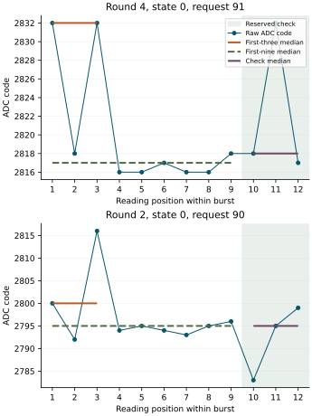
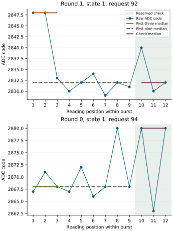
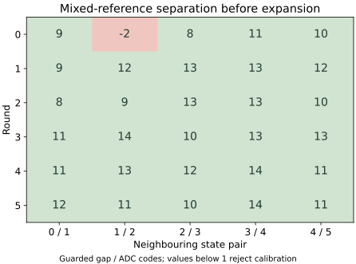
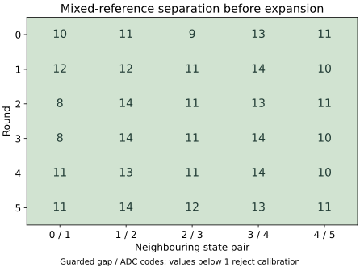
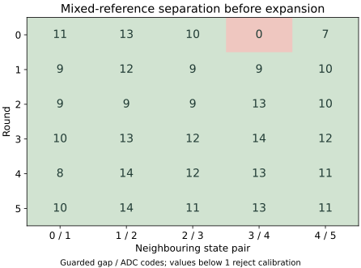

Question and rationale
Can raw Hyphos definitions, executed directly through SEIGRASM, create the experimental Seigsit before later content is supplied, preserve its connected identity and carrier relations, and recover Hyphos that performs a subsequent creation?
The interleaved-reference investigation established complete candidate recognition in two boots, while later acquisitions retained electrical exceptions. The within-bit comparison found agreement at both observed instants in all 10368 bit comparisons, including exceptional readings. These results provide an observable input and recording path for language development. They do not resolve analog accuracy or conversion freshness.
This experiment adds source-defined creation and use to that apparatus. Electrical uncertainty remains visible in the creation prerequisites. It does not select between Hyphos-defined first creation and SEIGRASM-defined first creation; the latter remains a later comparison under common requirements.
Primary-triple diagnostics and acquisition context
Declared 30 September 2026. The preceding return recovered five previous-boot entries and verified all 108 reserved diagnostic entries. Reserved recognition was complete, while primary ordinal 578 in round 0 retained a state-0 median of 2783, below its lower bound 2788. The same position and median were unresolved in the first logging boot. This experiment extends native logging to every triggered primary triple so those excursions and their immediate acquisition context are carried, retrieved and verified by Hyphos.
Controlled change
Keep the electrical instruction bytes, request sequence, zero added acquisition wait, reference selection, frozen bands, guards, restoration, creation, carried-action and retention criteria unchanged. Acquire the same 3912 observations. All added logger operations execute after acquisition and restoration, using the already recorded values; they add no ADC observations. Existing boot firmware, initial hardware state and apparatus addresses remain dependencies. The larger payload and extra recording phases change preparation size and total execution duration.
- Recover and consume the five entries from preparation
CD856CA9799C, retaining their preceding identity and counters. Then construct and retrieve the five current-boot entries. - Retain all 108 reserved diagnostic entries, including successful checks.
- Construct, persist, clear temporary storage, retrieve and verify the same eight-field diagnostic entry for all 324 triggered primary triples: final ordinal, three readings, native median, frozen expected-state bounds and expected-band decision. The 108 omitted-trigger controls retain their existing acquisition records and stay outside this primary denominator.
- Construct and retrieve one additional eight-field Hyphos context entry for each primary triple: final ordinal, intended state, requested control value, preceding request, preceding raw reading, first-acquisition start counter, last-acquisition end counter and calibration status.
The diagnostic and context entries join by final ordinal. The predecessor is the observation immediately before the triple, at final ordinal minus three. Request order and all intermediate timing observations remain in the original journal. Bound decision 0 means inside inclusive bounds, 1 below and 2 above; calibration and acquisition validity remain separate requirements. Context entries preserve native counters as integers, with their frequency in the original run record. They do not identify distinct physical conversions.
Execution and storage
Raw Hyphos defines both entry shapes and their verification. Existing literal SEIGRASM executes construction, object encoding, senary journal writes, capacity controls, temporary clearing, SD retrieval and subsequent Hyphos consumption. The existing eight-field flat representation and target instruction encodings remain unchanged. PC preparation places source and literal opcodes and supplies the fixed experiment reservations; the independent PC reader reconstructs all expected fields from the preserved observations.
The latest previous journal stays at SD sectors 131072–167871. The new primary journal uses 64–36863; the auxiliary reservation expands to 167872–184255 within the same 96 MiB image. Ranges are inclusive and written here in decimal. The installer verifies the preserved journal and skips writes to that extent, including across transfer boundaries. Earlier journals remain in their captured archives. These placements do not establish a general storage-allocation or discovery policy.
Acceptance and comparison
Require five matching previous entries, five matching current entries, 108 reserved diagnostic entries, 324 primary diagnostic entries and 324 context entries, with successful native transport, clearing, capacity rejection and Hyphos verification. Prior recovery must precede current entries; reserved diagnostics precede primary diagnostics, which precede context logging. The previous journal must remain byte-identical. A complete return contains 2972 Hyphos operations, 36774 current primary records and 12952 auxiliary records. Logging acceptance remains distinct from the unchanged requirement for 324/324 primary and 108/108 reserved recognitions and all existing restoration and source criteria.
Compare every exceptional primary median with its frozen band, calibration references, predecessor request and readout, and acquisition interval. Retain the successful observations from the same state and sequence position as comparison cases. Ordinal 578 is a specified recurrence check; the full denominator remains 324. Do not widen bands or alter thresholds after observing the return. A repeated ordinal or raw code alone cannot identify the physical cause. No excursion in this run would leave that cause unresolved.
The prescribed powered interval is 40 minutes. The added 648 entries each undergo native write, retrieval and verification, with two further complete reports. This interval includes recording time beyond the earlier 30-minute preparation; it is not a claim of continuous sampling. The first return is assessed below.
Primary diagnostics: preparation
Preparation 1EF924E5538A, returned on 30 September 2026. All 51 execution, record-integrity, return-reader and installation-preservation checks passed with supplied device responses. The archive preserves 203 validated inputs. All 57 instruction regions and the electrical parameters match the preceding preparation; the added Hyphos definitions execute through the existing instructions.
The SD passed 6144 transfer comparisons and two complete 96 MiB readbacks while locked, then ejected successfully. Installation retained the preceding 18841600-byte journal at its original addresses. Image SHA-256: 1a5fb8c4bd0caffbf0ce9eb652d9bcd83f07efeec0c2645bdce28c8502de66cb. The returned capture and qualification limits are reported below.
Frozen protocol · Controlled changes · Software validation · SD verification · Artifact index
Primary diagnostics: first return
Returned 30 September 2026. Complete criterion not met. Two independent read-only captures of the 96 MiB extent matched. All 3912 scheduled acquisitions and 36774 primary records were recovered, with six completed restorations, final restoration status 0 and pin-release status 0. Both boot files and the previous journal remained byte-identical to the preparation. The auxiliary journal ended after 706 of 12952 planned records, with no invalid recorded sectors and 15678 untouched reservations.
| Relation | Observed result |
|---|---|
| Previous-boot recovery | 5/5 entries retrieved and consumed by Hyphos before current entries; previous journal unchanged. |
| Current native logging | 5/5 entries passed storage, capacity rejection, clearing, retrieval and Hyphos verification. |
| Reserved diagnostics | 87 complete encoded payloads agree with their raw observations. The next payload has 30/70 words. The group verification report is absent. |
| Primary diagnostics and context | Neither group was recorded; their declared 324 entries per group remain unqualified. |
| Electrical recognition | 323/324 primary medians and 108/108 reserved medians recognized. One primary state-0 median remains unresolved. |
| Hyphos creation and later use | 35 creation/use/carried-execution cases completed. The unresolved input was correctly rejected; its carried execution was blocked. All 468 scheduled creation operations were recovered. |
| Carried progression and retention | All 12 progression cases and both content-retention cases passed. |
State-0 exception and input rejection
The exception occurred at ordinal 1160 in round 1, during triggered B. Its readings were 2789, 2783 and 2783; median 2783 was seven codes below the frozen lower bound 2790, with upper bound 2821. All six native nine-reading calibrations were accepted. Unlike the preceding exception at ordinal 578, this observation was also selected for a creation case. Hyphos rejected that case and blocked the dependent carried action. The other 35 cases completed, and outcomes across all 36 cases matched their inputs. The unchanged requirement for 36 successful creations was not met.
Ordinal 578 was recognized in this run: readings 2800, 2795 and 2794 gave median 2795 within [2791, 2821]. Median 2783 therefore recurred at a different ordinal and round. The acquisition immediately before the failed triple retained raw code 3008 while request 90 was recorded; its omitted-trigger role remains part of the original sequence. These details come from the original acquisition journal, not the unrecovered new context entries. Recurrence of one ADC code does not identify its physical cause or establish conversion freshness.
The retained three-reading comparison rejected round 0 after guarded state-3/4 overlap, leaving 54 primary outcomes and 18 reserved checks unavailable. The native nine-reading calibration retained all six rounds: primary counts were 323 correct and one unresolved, compared with 269 correct, one unresolved and 54 unavailable under the three-reading comparison. This supports retaining the nine-reading reference in this boot; it did not eliminate the state-0 excursion.
Recording boundary
The last valid auxiliary record is ordinal 705 at physical sector 168577. Sector 168578 and the remaining auxiliary reservation are unchanged from preparation. The partial 88th reserved payload corresponds to acquisition ordinal 2999, round 4, state 0. The 87 preceding payloads match their observations, but payload presence alone cannot establish clearing, retrieval or Hyphos verification. Those outcomes are retained in a group report written only after all 108 entries; that report was not recovered. The three later group assessments remain incomplete.
The retained records establish 704 source operations in complete reports, compared with 2972 planned. They do not record a persistent stop reason at the cutoff. An interrupted write, transfer failure, execution failure or power removal cannot be distinguished from this capture. The journal does not establish whether recording was still active at shutdown. Additional powered time cannot be assumed to recover a path that may already have stopped.
Next investigation
Make recording progress and failure status recoverable: retain completed-entry checkpoints before a later group can fail, and record the attempted sector and native transfer status when the recording path permits it. Fault-injection checks should verify exactly which earlier entries remain assessable after each interruption point. Keep electrical requests, zero added wait, calibration and recognition bounds unchanged while establishing that recording behavior. The state-0 cause remains open; new electrical conclusions require the intended diagnostic records.
Comparison between boots · Recovered diagnostic payloads · Previous-entry recovery · Assessment provenance · Artifact identities
Prior-boot recovery and reserved-check logging
Declared 29 September 2026. Native entry retrieval and Hyphos consumption recurred in both logging boots. The second boot retained one unresolved reserved state-0 check: readings 2796, 2783 and 2783 gave median 2783, four ADC codes below the frozen lower bound 2787. This investigation tests recovery of previous-boot entries and adds Hyphos-defined diagnostic entries for every reserved triple. Recording all 108 checks retains the successful comparison cases as well as exceptions.
Controlled change and execution
Electrical instructions, request schedule, zero added wait, reference selection, frozen calibration, 3912 acquisitions, restoration, creation cases, carried actions and content-retention criteria remain unchanged. Added operations execute after acquisition, restoration and the original source report. Existing readings supply the diagnostics; no extra ADC observation or freshness test is introduced.
- Preserve the preceding boot's entire native journal at its original SD sector addresses. Prepare the new executable and fresh raw journal extents separately.
- Run the existing acquisition and source sequence. Read all five previous entries through SEIGRASM, validating the preceding run identity, ordinal, section, senary encoding and record integrity before reconstructing each flat object.
- Execute Hyphos on the recovered entries, preserve them in the current auxiliary journal, clear temporary entry storage, retrieve the entries again, and verify numeric fields and recover text through Hyphos. Retain the preceding entry counters and frequency as observations from that boot.
- Create and consume the five entries describing the current boot, using the established logging procedure.
- For every reserved triple, execute
reserved_entryin Hyphos. Its eight fields are final acquisition ordinal, the three raw readings, native median, expected-state lower and upper bounds, and a decision code: 0 inside inclusive bounds, 1 below, 2 above. Persist, clear, retrieve and verify every entry through the same native path.
The ordinal links each diagnostic entry to the original request, raw transfer details, counters, temperature-related observations and calibration references. The independent reader derives signed margins, raw spread and reference extrema from these linked records. Those derived quantities are distinguished from target-recorded fields. Its diagnostic summary counter is the calibration-completion counter; acquisition timing remains in the linked rows. Reserved triples precede completion of the round's reference set, so this comparison is retrospective. A below-bound result describes the relation to the expected state; recognition across all six bands remains assessed by the unchanged electrical reader.
Raw storage and implementation boundary
The capture expands from 64 to 96 MiB. The boot partition retains its extent; previous records remain at sectors 64–36863. The new primary journal occupies 131072–167871, and an auxiliary reservation occupies 167872–171967. All ranges here are inclusive and use decimal notation. The wider SD transfer bound is constrained by explicit journal extents and reservation checks. No target filesystem is introduced. Installation verifies the existing journal against the preserved capture before writing and retains those bytes at their original addresses.
The original configuration bounds describe the nominal journal addresses before extent mapping; the recovery manifest records their physical placement. The independent reader creates an explicitly declared logical view for the unchanged reference analysis, while preserving and hashing the complete physical capture separately. Installation skips writes to the previous journal and verifies its bytes again afterward.
Authored AArch64 opcode words implement extent checks and retrieval sequencing. Existing SEIGRASM executes the raw Hyphos declarations, object encoding, senary record construction, SD transfers and verification. PC tools place unchanged source and literal opcodes, prepare reservations and inspect returned evidence. They do not execute Hyphos on behalf of the Pi. Firmware boot, fixed apparatus bindings and the existing electrical-access limitations remain.
Acceptance and interpretation
Recovery requires all five previous entries to match their preceding observations and be consumed successfully by Hyphos before the current-boot entries are created. The old journal must remain byte-identical. All 108 diagnostic entries must match independently reconstructed readings, medians, bounds and decisions, with successful native storage, clearing, retrieval, capacity rejection and Hyphos verification. Ordered counters must establish the recording sequence within the new boot; counters from different boots are not treated as a shared epoch.
Complete acceptance also retains 324/324 primary recognitions, 108/108 reserved recognitions, successful restoration, and the existing creation, carried-action and retention criteria. Diagnostic logging may pass while electrical recognition fails. This experiment does not widen bands or fit them to reserved observations. It cannot by itself identify the cause of an excursion, establish independent conversion freshness, qualify interrupted-write recovery or demonstrate complete Seigsit persistence.
A complete return contains 1028 Hyphos operations, 36774 current primary records and 1932 auxiliary records. The prescribed powered interval was 30 minutes, allowing for additional native writes, retrievals and verification. The first return records the actual observations and the longer reported powered interval.
Recovery and diagnostics: preparation
Preparation CD856CA9799C, returned on 30 September 2026. All 40 execution, record-integrity, return-reader and installer-preservation checks passed. Unchanged baseline coverage remains separately identified in the validation record. The candidate preserves 54 preceding instruction regions and adds extent binding and prior-entry retrieval; one SD transfer-bound instruction admits the declared 96 MiB capture. Electrical instructions, parameters and existing Hyphos definitions are unchanged.
The SD passed 6144 chunk comparisons and two complete readbacks while its volume remained locked, then ejected successfully. Installation wrote 81821696 bytes and skipped the 18841600-byte previous journal. Its original bytes and sector addresses are preserved. Image SHA-256: 5c58734a56603fd17965f8d75e5c136eb7d4241359deb16dfe403298158ff478. These checks establish preparation integrity. The frozen protocol specifies 30 minutes and a 96 MiB capture. The inherited top-level manifest fields still contain 1620 seconds and 64 MiB; its dedicated recovery extent, installed image and returned capture specify 96 MiB. The original manifest is preserved, and subsequent packaging now sets both top-level fields explicitly.
Returned acquisition uses the declared 96 MiB extent; the dedicated recovery reader independently assesses the primary journal, prior-entry consumption and all 108 diagnostic entries.
Frozen protocol · Controlled changes · Software validation · SD verification · Artifact index
Recovery and diagnostics: first return
Returned 30 September 2026; complete criterion not met. The two read-only 96 MiB captures are identical. All 36774 current primary records and 1932 auxiliary records were recovered without journal-integrity issues. The previous journal remains byte-identical at its original sector addresses. The reader preserved with the preparation reproduces all eleven saved assessments.
| Observation | Result | Scope |
|---|---|---|
| Previous-boot entries | 5/5 recovered and consumed | Original identity, counters, numeric fields and text retained; consumption preceded current-entry construction. |
| Current-boot entries | 5/5 verified | Native write, temporary clearing, retrieval, capacity rejection and Hyphos consumption passed. |
| Reserved diagnostic entries | 108/108 verified | Every native raw triple, median, expected-state bound and decision matches the independent reconstruction. |
| Primary recognition | 323/324 correct; 1 unresolved | One state-0 median lies below its frozen band. |
| Reserved recognition | 108/108 correct | No mismatches, unresolved medians or unavailable checks. |
| Creation, continuation and retention | All declared source criteria met | 36 creation/use cases, 42 controls, six chain paths and two retention cases passed. |
| Restoration | 6/6 round restorations | Final restoration and pin release both returned status 0. |
What the diagnostic entries establish
At the preceding reserved exception's corresponding position, round 3 and ordinal 2183 (zero-based), this return records 2793, 2794 and 2796: median 2794 within [2788, 2821], six ADC codes above the lower bound. Previously the median was 2783, below [2787, 2822]. This particular exception did not recur. The smallest current reserved margin is two ADC codes: ordinal 2999, median 2794 within [2792, 2822]. Correct classification therefore coexists with a narrow observed margin.
The unresolved primary observation is in round 0, state 0, request 90, ending at ordinal 578. Readings 2783, 2789 and 2783 yield median 2783, five ADC codes below [2788, 2820]. The same primary position and median were unresolved in the first logging boot; the intervening boot recognized all primary observations. This recurrence identifies a comparison to investigate, without establishing the cause. The new diagnostic entries cover reserved triples; this primary exception remains documented in the original raw acquisition and native decision records.
Powered interval and recording boundaries
The reported powered interval was several hours; exact duration was not measured. The complete fixed sequence contains 3912 acquisitions and 1028 Hyphos operations. The original acquisition interval is nominally 138.395 seconds; subsequent persistence and source operations extend execution substantially. Reserved diagnostic entry processing spans a further nominal 41.076 seconds, excluding its final report write. Counter frequency is reported configuration, with no independent accuracy calibration. The code returns to its parked loop after the finite sequence; this capture does not establish continuous sampling or endurance over the additional hours.
Boot-file contents, partition geometry and the MBR match the preparation. Seven sectors in the boot volume changed; their byte differences are preserved, without attributing a writer or time. No bytes beyond the auxiliary reservation changed. The boot-volume assessment covers the first 64 MiB; capture identity and both current journals are assessed over the complete 96 MiB. The reader's inherited preparation digest refers to its declared logical journal view; acquisition metadata retains the physical image digest.
Interpretation and next comparison
Native retrieval and Hyphos consumption across a power cycle are now observed for five flat entries, with their previous journal preserved. This is one cross-boot recovery observation. It does not qualify interrupted-write recovery, nested-value persistence or persistence of the complete Seigsit. All reserved diagnostic decisions were inside their expected bands; physical below-bound diagnostic behavior remains unobserved in this run.
The next useful extension is to retain the same diagnostic fields for primary triples as well as reserved checks, including request sequence and acquisition counters. Keep zero added wait, frozen bands and acceptance unchanged, and use those records to compare state-0 excursions with their immediate predecessors and reference extrema. Repeat prior-entry recovery independently of the electrical outcome. Independent conversion freshness and broader silicon agnosticism remain open.
Returned image SHA-256: a4cb34a431a0ec5eae4b9db608cc25c728f5ccb0cc24513d5ad74eafaf0e5ce7.
Prior-entry recovery · Native diagnostic entries · Comparison between boots · Assessment provenance · Artifact identities
Hyphos log entries and native retrieval
Declared 29 September 2026. The content-lifetime return recovered text and executable Hyphos after supplying-buffer reuse. Its electrical reference retained one recognition mismatch. The next investigation adds structured entries created and consumed by Hyphos, using the existing SEIGRASM senary journal. The question is whether an entry can be retrieved from the SD after its temporary object and encoding buffers have been cleared, with its relation to the recorded operation preserved.
Controlled change
Retain all electrical parameters, zero added acquisition wait, calibration rules, restoration, chain paths, content-retention cases and acceptance criteria. Execute logging only after the complete electrical journal and original source report have been recorded. No new electrical acquisitions are added. Five entries refer to actual recorded creation, attachment, supplying-buffer reuse, content recovery and successor creation. Entry construction happens after those operations; this experiment does not test immediate event-time logging.
The raw Hyphos log_entry declaration defines eight fields: sequence, event, subject identity, parent identity, execution outcome, operation-end counter, counter frequency and content. Run identity belongs to the enclosing journal. The recorded outcome is an execution status; recognition, qualification and creation acceptance remain separately assessed from their original records. The last entry binds the actual successor identity. The reuse and recovery entries carry the actual emitted text.
Native write and retrieval
- Execute Hyphos entry construction from the retained operation outputs.
- Encode the flat object into 560 canonical octets and append its 70 words through seven senary journal records. Verify each SD write by full readback.
- Temporarily bound recording capacity to the current journal cursor. A further append must reject before I/O and preserve that cursor. Restore the original reservation limit.
- Clear the entry's entire temporary arena and encoding buffer; read every cleared word to confirm zero.
- Read the seven recorded sectors from the SD into separate storage. Check run identity, ordinal, section, senary digits, canonical encoding and integrity fields.
- Recover the object, encode it again and compare all 560 octets. Publish the recovered value only after this comparison.
- Execute Hyphos numeric-field verification and content extraction. Persist their results and the native transport report.
The flat transport admits at most eight integer or text fields, with field names and text each limited to sixteen octets. Nested objects are rejected. The SD representation carries values and names without process addresses. These bounds describe this first logging implementation; they do not define Seigsit layers or the eventual logger's capacity. Retrieved text borrows the recovered buffer, which remains available until the run ends.
Acceptance and interpretation
All five entries must match their independently recovered source observations. Every append, retrieval, canonical comparison and Hyphos consumption must succeed. Each capacity control must report rejection without cursor advance, and all earlier entries must remain intact. The independent PC reader compares the journal contents, original operation records and target consumption results. Any incomplete suffix leaves native retrieval unqualified. A complete return contains 3912 acquisitions, 689 Hyphos operations and 36774 of 36800 journal sectors; 26 reservations remain unused.
Logging acceptance and the unchanged electrical, chain and content-retention criteria are reported separately. Complete experiment acceptance requires all of them. A passing logging result would establish retrieval within the same boot after temporary storage is cleared. It would not establish recovery after a restart or power loss, arbitrary nested-content persistence, independent conversion freshness, complete logger policy or equivalence on another architecture. The existing boot and apparatus dependencies remain.
Native logging: two-boot comparison
29 September 2026: preparation 1D9DE66E61CA passed all five native logging cases and capacity controls. Entry retrieval and Hyphos consumption after temporary storage clearing have now recurred in two boots with unchanged instructions, definitions and settings. The complete experiment criterion was not met: one reserved electrical check remained unresolved.
| Measure | Boot 1 | Boot 2 |
|---|---|---|
| Native entry retrieval and Hyphos consumption | 5/5 passed | 5/5 passed |
| Capacity rejection without cursor advance | 5/5 passed | 5/5 passed |
| Content-retention cases | 2/2 passed | 2/2 passed |
| Carried-action paths | 6/6 passed | 6/6 passed |
| Reference creation/use cases and controls | 36/36; 42/42 passed | 36/36; 42/42 passed |
| Native primary recognition | 322/324 correct; 2 unresolved | 324/324 correct |
| Nine-reading reserved checks | 106/108 correct; 1 mismatch, 1 unresolved | 107/108 correct; 1 unresolved |
| Complete experiment criterion | Not met | Not met |
Entry recovery and carrier continuity
Every entry matches all eight fields of its independently recovered source operation. The entries retain empty-carrier creation, attachment, the borrowed replacement text Nye Seigr, the retained text Hei Seigr, and successor creation from retained Hyphos. The second boot records successor identity 7130296979 with parent 201, matching the actual created successor; the first boot recorded identity 7129464779. Entry sequence remains batch recording order, while operation counters retain the source chronology.
In each case, the native report confirms zero throughout the cleared temporary arena and encoding buffer, successful retrieval of all seven SD records, canonical equality of all 560 entry octets, and successful Hyphos verification and content extraction. Every capacity control rejected with status 1 without advancing the cursor. All entries remain intact. Both text and raw-Hyphos retention cases passed, including later creation of an empty successor from the retained source.
The complete return contains 3912 acquisitions, 689 Hyphos operations and 36774 journal records, with 26 reservations unused. All six block restorations, final restoration and pin release succeeded. The nominal logging interval was 1.887769 seconds at the reported 54 MHz counter frequency, excluding persistence of the final report. This is neither an independently calibrated time measurement nor the total powered duration.
Electrical exception and acceptance
The unresolved reserved check is in round 3 at ordinal 2183, using zero-based numbering. Its state-0 request code was 90 with offset 0. Raw ADC codes 2796, 2783 and 2783 give median 2783, below the native nine-reading state-0 interval [2787, 2822]. The three-reading estimator also rejects it against [2787, 2821]. All 324 primary medians were correctly recognized by both estimators; each retained 107/108 correct reserved checks. All six calibrations and 432 native decisions were reconstructed.
The inherited chain-length acceptance criteria require both 324/324 primary recognitions and 108/108 reserved checks. The latter requirement is unmet. The first boot also contained median 2783 in two unresolved primary triples, but this recurrence does not establish a common physical cause. Independent conversion freshness and the origin of the excursions remain unresolved.
Evidence and next capability
Two complete read-only SD acquisitions matched. The executable and boot configuration match preparation; partition geometry is unchanged and the FAT copies agree. Seven changed sectors outside the journal are retained in the media comparison; their writer and timing remain undetermined. All 195 preparation artifacts and 182 frozen source files verified. The frozen readers reproduce all eight saved assessments. All 21 current logging and retention return checks passed, including rejection of corrupt, incomplete or altered logging evidence and enforcement of the reserved-check requirement.
Capture SHA-256: adcc883c30a5252d46f234f8a721ec5c9115fa0e08fc9c472556b6ea60d8a58b.
The two boots establish recurrence of retrieval within each boot after temporary storage clearing. Each boot wrote and consumed its own entries. Target retrieval after a restart, interrupted-write recovery, nested-content persistence and complete Seigsit persistence remain untested. The next proposed capability is native recovery and Hyphos consumption of entries written during a previous boot, before replacement entries are created, preserving both run identities and recording recovery outcomes separately.
Two-boot comparison · Logging assessment · Retention assessment · Electrical assessment · Complete analysis · Media comparison · Provenance · Artifact index
Native logging: unchanged second boot
The first logging return passed all five entry-retrieval cases and all five capacity controls. Its electrical reference retained two unresolved primary recognitions and two reserved-check exceptions. A second boot tests recurrence of native retrieval and Hyphos consumption under the same conditions. Electrical, creation, chain and content-retention criteria remain unchanged and are assessed separately.
Preparation 1D9DE66E61CA preserves all 55 instruction regions, all 7921 data regions outside the run header, and all 182 validated source files from D032841E8E28. Payload bytes differ only in the run header. All 36800 journal reservations were verified empty under the new identity. Existing software-validation results are reused after exact source-hash comparison; execution tests were not rerun for this unchanged repeat.
The SD contents matched the preserved first return before replacement. The new 64 MiB image passed 4096 verified transfers and two complete readbacks while the volume remained locked; safe ejection succeeded. Image SHA-256: a13eff166cd82f232ea2a55a04a1ef3cc69bd9091b9015fd233207df3aa8ce03. The prescribed powered interval was 27 minutes. The second return records all five successful logging cases and the remaining electrical exception.
Frozen repeat protocol · Unchanged-input comparison · SD installation · Artifact index
Native logging: preparation
Preparation D032841E8E28 implements the declared logging investigation. All 43 current supplied-input and return-reader checks passed with source hashes unchanged during validation. The validation record separately identifies 204 inherited checks for unchanged baseline components; those checks were not rerun. The new checks execute the complete logging path, reject corrupted records and invalid extents, verify capacity rejection and cleared storage, reproduce earlier physical return assessments, and show that changed Hyphos changes the recorded entry.
The archive preserves 182 validated source files. Comparison with 8C63E07C8989 confirms all 52 preceding instruction regions, all preceding Hyphos definitions, electrical parameters and data regions are unchanged, except the run header and launch binding. Three added instruction regions provide flat values, journal retrieval and the logging sequence. The image contains the raw Hyphos entry, verification and content definitions.
The 64 MiB image was written in 4096 verified transfers and matched two complete locked readbacks. The previous SD contents matched the preserved content-retention return before replacement. Safe ejection succeeded. All 36800 initial reservations carry the new run identity. Image SHA-256: ebbd35b6c49fb90590123982b4f58df697871c62cd809e0a861ed6667b2f6202.
Prescribed powered interval: 27 minutes. The first physical return records completion of all five native retrieval cases.
Frozen protocol · Manifest · Preparation comparison · Validation record · SD installation
Native logging: first return
29 September 2026: preparation D032841E8E28 passed all five logging cases. Hyphos-created entries were written to the senary SD journal, retrieved after their temporary storage was cleared, and consumed by Hyphos. All five capacity-rejection controls passed. The complete experiment criterion was not met: the unchanged electrical reference contained two unresolved primary recognitions and two reserved-check exceptions.
Retrieved entries
| Recorded operation | Subject / parent | Recovered content | Retrieval and consumption |
|---|---|---|---|
| Empty-carrier creation | 200 / 0 | empty | Passed |
| Later attachment | 200 / 0 | attached | Passed |
| Borrowed-buffer check after reuse | 200 / 0 | Nye Seigr | Passed |
| Retained carrier content recovery | 200 / 0 | Hei Seigr | Passed |
| Successor creation from retained Hyphos | 7129464779 / 201 | successor | Passed |
All eight fields of every entry match the independently recovered operation record. The last entry identifies the actual successor and its parent. Entry sequence denotes batch recording order, not event chronology: the source content-recovery operation precedes the borrowed-buffer check, and their recorded counters preserve that ordering.
For every entry, the native report confirms zero across the cleared 64 KiB temporary arena and 560-octet encoding buffer, retrieval of all 70 words from seven SD records, canonical equality of all 560 octets, and successful Hyphos field verification and content extraction. Each capacity control rejected with status 1 without advancing the journal cursor; the original 36800-record limit was restored. All earlier entries remain intact.
The recorded interval from logging start through the fifth retrieval and consumption is 1.887766 seconds at the reported 54 MHz counter frequency. It excludes persistence of the final 52-record report. Counter-frequency accuracy and the total powered duration are not established by this interval.
Reference outcomes
Both content-retention cases passed again: original text and raw Hyphos survived supplying-buffer replacement, and retained Hyphos created an empty successor. This is a second retention observation with the appended logging phase, rather than an unchanged repeat. All six chain paths, 36 original creation/use cases and 42 controls passed. The return contains 3912 acquisitions and 689 Hyphos operations: 468 original, 176 chain, 30 retention and 15 logging operations. All six block restorations, final restoration and pin release succeeded.
Native primary recognition was 322/324 correct, with two unresolved medians and no mismatch. Reserved checks were 106/108 correct, with one mismatch and one unresolved median. The three-reading comparison has the same counts as the nine-reading estimator in this boot. All six calibrations and 432 native decisions were reconstructed; comparison integrity passed.
| Round / final ordinal | Condition | Captured triple; median | Classification |
|---|---|---|---|
| 0 / 560 | State 0, trigger_B | 2795, 2783, 2783; 2783 | Unresolved; below state-0 interval [2789, 2820] |
| 0 / 578 | State 0, prime_A | 2783, 2791, 2783; 2783 | Unresolved; below state-0 interval [2789, 2820] |
| 0 / 251 | Reserved state-3 check, offset +1 | 2992, 2992, 2980; 2992 | Unresolved; between state-3 upper bound 2987 and state-4 lower bound 2994 |
| 3 / 2171 | Reserved state-0 check, offset +1 | 2832, 2816, 2832; 2832 | Classified as state 1 within [2827, 2878]; state-0 upper bound 2822 |
These electrical exceptions precede the logging phase. The record does not identify their physical cause or independently establish conversion freshness. Logging success does not change their classification or the declared overall acceptance criterion.
Evidence and next comparison
Two read-only 64 MiB SD acquisitions matched. All 36774 completed journal records were recovered, with 26 reservations unused. The boot configuration and executable match the prepared image. Seven changed sectors outside the journal are retained in the media comparison; their writer and time of modification are undetermined. The partition geometry is unchanged and the FAT copies agree.
All 195 preparation artifacts and 182 frozen source files match their recorded hashes. The frozen readers reproduce all seven saved assessments. Fourteen current return checks passed, including corrupted-record rejection, altered entry and capacity evidence, incomplete logging, and reproduction of the preceding retention return. Capture SHA-256: 4f70e0d19a93e388a4b35c6ff8178dab803c674054ac85c612d677fb81bc81b5.
This establishes native retrieval and Hyphos consumption of the five bounded flat entries within one boot after temporary storage clearing. Recovery after restart or power loss, nested-content persistence, general logger policy and other architectures remain unqualified. The next proposed comparison is an unchanged logging repeat with a new run identity and empty journal, to assess recurrence while retaining the electrical criteria.
Logging assessment · Retention assessment · Electrical assessment · Complete analysis · Media comparison · Provenance · Artifact index
Retained content after buffer reuse
Declared 29 September 2026. The chain-length return recorded creation, later carrier use and source-controlled stopping with every supplying source still available. That condition leaves content lifetime unresolved. This investigation tests whether Hyphos can retain independent content through the created Seigsit, reuse the supplying buffer, and recover the retained content for later use.
Controlled change
Retain the electrical reference, native calibration, zero added acquisition wait, 1 ms settling, operating limits, restoration, original 36 creation/use cases and 42 controls, and all six chain-length paths. Append two content-lifetime cases after those paths and before restoration. The new cases use already recorded final-round observations and add no electrical acquisitions. The parent uses the first selected observation; the subsequent creation uses the next selected observation, with its later recorded counter. These are retained observations, not new conversions caused by content recovery.
Each parent is created by the existing raw Hyphos seigsit definition and checked with an empty carrier before content is attached. A raw Hyphos preserve definition invokes the experimental retain content value operation. SEIGRASM supplies bounded storage and copies text bytes; Hyphos continues to define the entity, its carrier relation, qualification and subsequent creation. Ordinary borrowed values retain their existing behavior. Integer retention returns the value directly; object retention is explicitly rejected in this slice.
| Case | Later supplied content | Intervention and expected observation |
|---|---|---|
| Text | Hei Seigr | Replace the supplying bytes with Nye Seigr. Recovery through the carrier must still emit the original text; the borrowed control must emit the replacement. |
| Raw Hyphos | The existing renew definition | Replace the supplying bytes with a valid definition that rejects creation. Execute the retained definition to create an empty successor linked to the parent. Executing the reused buffer must produce the declared rejection. |
Recording and acceptance
The target records three separate byte extents for each case: the supplied buffer before retention, that buffer after replacement, and the retained bytes after subsequent use. Each extent has a declared capacity of 1536 octets. The independent reader resolves returned content and retained function source only through these captured bytes; prepared source is used solely for comparison. The supplying buffer remains empty during creation and receives its content only after the empty-carrier check. Ordered counters bracket creation, supply and retention, replacement and subsequent execution. The records also retain source outcomes, empty-carrier checks, parent state and carrier snapshots, the successor and its parent identity.
Both cases must preserve the original content after buffer reuse, maintain the parent's identity, state and carrier relations, and meet every declared source outcome. The retained Hyphos must create and qualify an empty successor from the later recorded observation; the replacement definition must reject creation. Controls require integer retention, rejection of an unsupported object, rejection when the content allocation has no remaining capacity, and observation of replacement bytes through an ordinary borrowed reference. Failed allocation must publish no value. The electrical and chain-length reference criteria remain required and are assessed separately.
Configuration schema 32 appends 4608 words to the existing acquisition section. Thirty added Hyphos operations bring the scheduled total to 674; the acquisition total remains 3912, comprising 3888 reference readings and 24 chain-action readings. A complete record occupies 36687 of 36800 journal reservations. All target instruction bytes are authored literal SEIGRASM; PC tooling places the image and independently reads evidence. The existing boot and apparatus dependencies remain.
Interpretation boundary
A passing return would establish retained text and executable Hyphos content within the declared live arenas after supplying-buffer reuse. It would not establish arena reclamation, content persistence across boots, complete Seigsit relations, independent conversion freshness, or equivalence on other architectures. The 8192-octet text limit and the case storage bounds are current implementation and apparatus limits. They do not define the eventual size or layer structure of Seigsit.
Content lifetime: first return
29 September 2026: preparation 8C63E07C8989 passed both declared content-retention cases. Text and raw Hyphos remained available through the created carriers after the supplying buffers were replaced. The retained Hyphos created and qualified an empty successor. The complete experiment criterion was not met: the unchanged electrical reference contained one primary recognition mismatch.
Content recovery and subsequent creation
| Case | Retained content | Reused buffer and outcome |
|---|---|---|
| Text | All 9 octets of Hei Seigr recovered unchanged through the carrier. | The borrowed control recovered Nye Seigr. Parent identity, state and carrier were preserved. |
| Raw Hyphos | All 1144 octets of the supplied renew definition recovered unchanged. | Execution from the retained address created an empty successor linked to its parent. Execution from the replacement buffer returned the declared rejection. |
Each parent was recorded with an empty carrier before later content attachment. Ordered source counters place creation before supply and retention, then replacement before recovery. The retained text descriptors were the same values before and after reuse, while the captured supplying bytes differed. Both cases retained integer value 6, rejected the unsupported object, and rejected insufficient capacity with no published value. All 30 added Hyphos operations completed with their declared outcomes.
The raw Hyphos case preserved parent identity 201 and its state-2 observation. The successor retained that parent identity, qualified as state 3 and had an empty carrier. Its observation counter was 7129372521, later than the parent's 7060680429. These are the preselected, already recorded final-round observations; content recovery caused no additional acquisition. Execution used the independently retained source address, while the reused buffer produced {status: 1}.
Reference outcomes and electrical exception
All six chain paths met their criteria: eight actions, four source completions, one supplied-prerequisite rejection and one distinct capacity stop. Nine source opportunities executed and three remained unused. The original 36 creation/use cases and 42 controls passed. The complete journal recovered 3912 acquisitions and 674 Hyphos operations: 468 original, 176 chain and 30 retention operations.
| Measure | Chain-length boot | Content-retention boot |
|---|---|---|
| Native nine-reading primary recognition | 324/324 correct | 323/324 correct; 1 mismatch |
| Nine-reading reserved checks | 108/108 correct | 108/108 correct |
| Three-reading primary comparison | 324/324 correct | 322/324 correct; 1 mismatch, 1 unresolved |
| Three-reading reserved checks | 108/108 correct | 105/108 correct; 3 unresolved |
The mismatch occurred in round 0, at the state-2 prime_A triple ending at ordinal 458. The requested code was 96; captured ADC codes were 2944, 2944 and 2909. Their median, 2944, falls outside the recorded state-2 interval [2880, 2931] and inside the state-3 interval [2938, 2988]. Both comparison estimators misclassified this triple. The nine-reading estimator resolved the other primary exception and all three reserved-check exceptions of the three-reading estimator. All six native calibrations were accepted and reconstructed from the record.
This electrical exception precedes the retention phase. The record establishes the request, returned values and resulting classification; it does not distinguish conversion staleness, electrical behavior or another acquisition effect. The exception remains in the denominator and prevents complete experiment acceptance. It does not change the independently observed outcomes of the two retention cases.
Recovery and provenance
Two complete read-only 64 MiB captures matched. The journal contains 36687 occupied reservations and 113 empty reservations. All six block restorations completed, final restoration and pin release returned status 0, and no ADC ordering issue was reported. At the reported 54 MHz counter frequency, the retention phase spans approximately 66.379 ms and trial start to the final electrical section spans 1540.795 s. These counter-derived intervals do not measure the full powered duration or establish absolute clock accuracy.
The boot payload and configuration match preparation; partition geometry and both FAT copies agree. Seven sectors outside the journal changed. Their writer and timing remain undetermined. All 183 preparation artifact hashes and 170 frozen source hashes verified. The reader preserved before execution reproduces all six saved assessments. Seven focused retention-return checks and 22 earlier progression-return checks passed. Capture SHA-256: c1c9ec8d34071fd7af9828506c32f3ee1b9237c2458659e34cb948aa53a11ddd.
Interpretation and next comparison
This boot supports explicit retention of text and executable Hyphos through the experimental Seigsit after supplying-buffer reuse, within the declared live arenas. It also records a successful successor creation from the recovered Hyphos. Recurrence, reclamation, persistence across boots, complete Seigsit relations and independent conversion freshness remain unestablished. The next proposed comparison is an unchanged repeat with a new run identity and empty journal, to test recurrence of retention and the electrical-reference outcome without changing the acceptance criteria.
Acquisition · Retention results · Chain results · Electrical observations · Provenance · Boot comparison · Artifact identities
Content lifetime: preparation
Preparation 8C63E07C8989 implements the declared buffer-reuse comparison. All 204 supplied-input execution checks passed, with source hashes unchanged during validation. The archive preserves 170 validated source files. Byte comparison with 523CB2BC7F96 confirms all 50 existing instruction regions, the electrical parameters, chain descriptors and existing raw Hyphos definitions are unchanged. Two added SEIGRASM operations implement explicit content retention and the experimental supply/reuse sequence.
The checks confirm that the supplying buffer is empty during creation, holds the original content during retention and holds replacement content during recovery. They exercise retained-source creation, insufficient capacity, unsupported objects, altered source and corrupted records. Complete journal reconstruction retains the new captured bytes and the existing reference results. These are software execution checks with supplied device observations; the physical return is assessed separately.
The 64 MiB image was written in 4096 verified transfers and matched two complete locked readbacks. Safe ejection succeeded. Before replacement, the SD matched the preserved chain-length return. The new image has 36800 journal reservations; the complete declared record occupies 36687. Image SHA-256: b61d84808f2e800c88a135c81a8676e76d849c3110782c2e548faebd1427d941.
Prescribed powered interval: 27 minutes. The first return has been recovered and assessed.
Frozen protocol · Preparation manifest · Controlled comparison · Execution checks · SD verification · Artifact identities
Carried Hyphos chain lengths
Declared 29 September 2026. The continuation comparison recorded the same source decisions in two boots, but reserved exactly two opportunities per initial parent. This investigation tests source-controlled stopping over different chain lengths, including completion with unused capacity. It also tests whether a still-continuing source at the recording limit is distinguished from normal completion.
Procedure and controlled change
Retain the six-round electrical reference, native nine-reading calibration, zero added acquisition wait, 1 ms settling, operating limits, restoration path and original 36 creation/use cases with 42 controls. Retain the raw proceed definition and creation-before-content relations. The changed SEIGRASM capability consumes a disposition from the recovered Hyphos after each successor is created and used. Completion or prerequisite rejection ends that chain; its unused source and acquisition reservations remain empty. Each further action consumes the previous successor's live value and recovered carrier.
| Initial state | Capacity in actions | Expected path and stop |
|---|---|---|
| 2 | 1 | Complete immediately; no action |
| 3 | 2 | 3 → 4; complete with one unused reservation |
| 4 | 3 | 4 → 5 → 0 → 1; complete |
| 5 | 1 | 5 → 0; record capacity stop while the source requests state 1 |
| 0 | 2 | 0 → 1 → 2; complete |
| 1 | 3 | 1 → 2; reject the supplied unavailable prerequisite, leaving two reservations unused |
Terminal states and the availability control are supplied experimental inputs. The last path supplies availability 1 initially and 0 to the successor's decision; the other paths retain availability 1. This deliberate rejection does not represent an observed ADC failure. The capacities bound memory, acquisition and recording for this experiment; they do not define Seigsit termination. Completion after one action and the capacity stop after one action provide an equal-length comparison with different source outcomes.
Execution and recording
The target executes literal AArch64 instruction words from SEIGRASM. Those operations invoke the existing Hyphos definition, value, function and retention operations. The carried source selects the requested state and emits continuation, completion or prerequisite rejection. The PC places literal instructions, raw source and bounded descriptors; it does not evaluate target decisions. The existing boot and apparatus dependencies remain.
Configuration schema 31 retains 12 reservations and the previous journal extent. The six capacities are 1, 2, 3, 1, 2 and 3. Header words 8–13 retain each chain's stop reason: 0 unfinished, 1 source completion, 2 source rejection, 3 capacity while the source still requests continuation, and 4 invalid admission or disposition. The visited-reservation count includes skipped slots; executed opportunities are counted separately. A failed electrical acquisition stops all remaining chains through the existing restoration path.
Every continued action retains the three raw readings, median, calibration relation, newly created successor, exact source recovery and original/immediate parent relations. After-source dispositions are retained separately from the before-action decisions. Skipped reservations must contain no source or acquisition records. The independent reader reconstructs each stop from the emitted source result and remaining capacity, and verifies original-parent snapshots both before and after a continued action.
Acceptance and interpretation
All six paths must match the declared sequence: eight admitted actions, four source completions, one supplied-prerequisite rejection and one capacity stop. Nine source opportunities execute; three later reservations remain entirely unused. Immediate completion also leaves its dependent creation and acquisition regions empty. Recover all 24 added readings and 176 added Hyphos operations. Every admitted action must satisfy the unchanged recognition and creation/use criteria, with no replacement observation or retry.
The original 3888 acquisitions, 468 reference source operations, 36 creation/use cases, 42 controls, 324/324 primary recognitions and 108/108 reserved checks remain required. The complete expected record contains 3912 acquisitions and 644 source operations. A reported completion with a still-continuing source, any work after a recorded stop, a lost parent relation or any missing required observation fails the relevant criterion. An estimator advantage is not required.
A successful return would establish source-controlled stopping within these bounded chains, including a third successive action and an observable distinction between completion and capacity exhaustion. It would not establish unrestricted unfolding, complete Seigsit relations, independent conversion freshness or architecture-independent installation.
Chain lengths: preparation
Preparation 523CB2BC7F96 implements the declared chain-length investigation. All 185 supplied-input execution checks passed, with source hashes unchanged during validation. The archive preserves 160 validated source files. Byte comparison with 8E95715A8270 confirms 49 unchanged instruction regions, unchanged raw Hyphos definitions and unchanged electrical parameters. The progression instruction region adds after-source stopping and distinct chain outcomes; the bounded descriptors supply the declared capacities and controls.
The 64 MiB image was written in 4096 verified transfers and matched two complete locked readbacks. Safe ejection succeeded. The previous SD contents matched the preserved continuation return before replacement. All 36800 initial journal reservations carry the new identity. Image SHA-256: ffed19773a46ed1160b10641d2dcb2e805104af295a32799b4e68b2d58801707.
Powered interval: 27 minutes. The first return records all 3912 acquisitions and 644 source operations, with completion, supplied-prerequisite rejection and capacity exhaustion distinguished.
Manifest · Preparation comparison · Validation record · SD installation
Chain lengths: first return
Acquired 29 September 2026. Preparation 523CB2BC7F96 met the declared criteria in all six paths. Carried Hyphos controlled chains of zero, one, two and three actions. Four paths completed, one rejected a supplied unavailable prerequisite, and one reached its recording capacity while its source still requested continuation.
Recorded paths and stopping
| Path | Recorded stop | Acquisition medians |
|---|---|---|
| 2 | Complete immediately; no acquisition | — |
| 3 → 4 | Complete; one unused reservation | 3021 |
| 4 → 5 → 0 → 1 | Complete after three actions | 3077, 2798, 2854 |
| 5 → 0 | Capacity reached; source still requests state 1 | 2799 |
| 0 → 1 → 2 | Complete after two actions | 2854, 2909 |
| 1 → 2 | Reject supplied prerequisite; two unused reservations | 2909 |
Nine source opportunities executed and eight admitted electrical actions. All 24 added readings and 176 added source operations were recovered. The immediate-completion case contains its source decision and no dependent acquisition or creation. The three later skipped reservations contain no action or source records. The recorded stop codes are 1, 1, 1, 3, 1 and 2, agreeing with the independently reconstructed source outcomes and capacities.
The three-action chain consumed each preceding successor's live state and recovered source. Its third action used the second successor, rather than reconstructing an initial parent. Every admitted action created its successor with an empty carrier before attachment. Exact source recovery and the immediate and original parent relations were preserved. Completion after one action and capacity exhaustion after one action produced different source plans: the completed path emitted completion; the capacity-limited path emitted a valid request for another action. The rejected path emitted reason 6 after the supplied availability changed to zero.
Electrical reference and record integrity
The unchanged reference recovered 3888 acquisitions and 468 Hyphos operations. All 36 creation/use cases and 42 controls passed. Native nine-reading recognition was 324/324 primary observations and 108/108 reserved checks, with all six calibrations available. The three-reading comparison also recognized 324/324 primary observations and 108/108 checks; no nine-reading advantage was observed in this boot. The nominal baseline retained 15 unresolved primary observations. These remain in its recorded denominator.
The complete return contains 3912 acquisitions and 644 source operations. All 36226 occupied journal sectors were recovered, followed by 574 unchanged empty reservations. The journal and ADC-ordering assessments contain no integrity issues. Six block restorations completed; final restoration and pin-release status were zero. The chain phase spans approximately 1.306 seconds using the recorded 54 MHz counter frequency; this interval does not include the subsequent full-journal recording.
Two complete read-only SD captures match. The returned executable and boot configuration match the prepared image. The partition geometry, MBR and agreement between FAT copies are preserved. Seven changed sectors outside the journal are retained in the boot-volume comparison; their writer and timing are not established by this capture. The reader frozen before the run reproduces all five saved assessments, and all 160 frozen source files and 173 preparation artifacts match their recorded hashes.
Interpretation and next investigation
This boot establishes source-controlled stopping within the declared bounded chains, including a third successive action and completion with unused capacity. Recording capacity remains an apparatus limit with an explicit outcome. The result does not establish unrestricted unfolding, complete Seigsit relations, independent conversion freshness or cross-architecture equivalence.
The next proposed run repeats these paths with unchanged instructions, source, capacities, controls and electrical criteria. Only the recording identity and empty journal should change. Recurrence is the remaining question for this capability before extending chain execution or testing continuation after a capacity stop.
Capture SHA-256: 73bcb2b4ac15dc74edf3819f05fe7c058ed93d8d12238609b55c98678ae452ae.
Acquisition record · Chain assessment · Source and observation relations · Boot-volume comparison · Artifact identities
Carried Hyphos continuation
Declared 28 September 2026. The two successive-action boots completed every prescribed chain. The apparatus still scheduled both actions, so those returns did not test whether a decision carried through a created successor could prevent the next action. This investigation makes continuation, completion and prerequisite rejection observable before electrical admission.
Procedure and controlled change
Retain the six-round electrical reference, native nine-reading calibration, zero added acquisition wait, 1 ms settling, operating limits, restoration path and 36 reference creation/use cases with 42 controls. Preserve the six initial states and two action opportunities per initial parent. The changed capability is admission from a decision emitted by carried Hyphos; the second opportunity may now finish without an action or reject an unavailable prerequisite.
Raw proceed source is attached after each initial creation and recovered through its carrier. It checks the entity's identity links and observation availability, checks a supplied prerequisite, and compares the observed state with a terminal state. It emits continuation with a requested state and control code, completion, or rejection with a reason. The terminal states and supplied availability controls are fixed experimental inputs. They do not define general Seigsit termination semantics.
| Initial state | Terminal state | Second prerequisite | Expected path |
|---|---|---|---|
| 2 | 4 | 1 | 2 → 3 → 4; two actions |
| 3 | 4 | 1 | 3 → 4; complete before another action |
| 4 | 0 | 0 | 4 → 5; reject the supplied unavailable prerequisite |
| 5 | 1 | 1 | 5 → 0 → 1; two actions |
| 0 | 1 | 1 | 0 → 1; complete before another action |
| 1 | 3 | 0 | 1 → 2; reject the supplied unavailable prerequisite |
All first opportunities receive prerequisite 1. Each second opportunity consumes the first successor's live value slot and recovered source. The deliberately unavailable prerequisite in two cases is a supplied control; it is not a measured ADC failure. Every real rejected calibration or observation remains a failure of that scheduled path, with no replacement observation, retry or reclassification as planned completion.
- Create the initial entity from its selected final-round observation; verify the empty carrier, attach the raw source and recover it. Execute the source, retain its plan and expose its disposition through Hyphos.
- SEIGRASM accepts only a successfully emitted integer disposition. For continuation, retain the existing command bounds, calibration and electrical checks, acquire three readings, recognize their median and let Hyphos create the successor before attaching content. Completion and rejection skip both electrical acquisition and the dependent creation sequence.
- Recover the same source through the successor. Its emitted next plan must agree with the plan evaluated at the next opportunity under the same declared inputs. Record the successor and original parent's state and carrier before the decision; preserve both after any admitted second action.
- Restore voltage and pin ownership through the unchanged enclosing procedure. Preserve all 12 opportunity records, including the empty acquisition and after-source regions of deliberately declined opportunities, alongside the complete reference journal.
Implementation and evidence
The target executes literal AArch64 instruction words from SEIGRASM, which invoke the existing Hyphos definition, value, function and retention operations. The carried proceed definition owns the decision; disposition exposes its result. Completion and prerequisite rejection are distinct source outcomes. Invalid or failed dispositions inhibit the action. The PC places instruction literals, raw Hyphos and bounded interfaces, and later decodes the journal. It does not compute target decisions or compile a substitute implementation. Existing boot and apparatus dependencies remain.
Configuration schema 30 retains the same journal extent. All 12 opportunity slots remain reserved; skipped acquisition ordinals are not reassigned. Action word 15 records 1 for continuation, 2 for completion, 3 for prerequisite rejection and 4 for an invalid disposition; zero indicates no recorded decision. The source journal preserves the plan, disposition and rejected command/request values. Declined opportunities must leave every acquisition row and the entire dependent source region zero. The returned reader compares those records with the raw source, retained parent relations and frozen case bindings.
Acceptance and interpretation
The declared outcome is eight admitted actions with 24 added readings, two completion decisions and two supplied-prerequisite rejections, across all six paths. All 198 expected added source operations must be recovered. Every admitted action must meet the existing recognition, creation-before-content, exact source recovery and ancestor-continuity criteria. A declined opportunity must have its correct recorded source reason and no electrical or dependent creation record. All original 3888 acquisitions, 468 reference source operations, 36 creation/use cases and 42 controls remain required, together with 324/324 primary and 108/108 reserved-check recognitions. No estimator advantage is required. The independent reader must reproduce the target's native calibration and decisions.
Any request after completion or rejection contradicts admission control. A missing disposition, unexpected source exception, unavailable real prerequisite, changed ancestor, missing journal or incomplete restoration cannot count as success. Electrical acquisition failure inhibits the remaining opportunities. All scheduled cases retain their original denominator. The two-action limit remains an apparatus bound; a plan emitted after the second admitted action is recorded but receives no third opportunity.
A complete return would support extending Hyphos-controlled continuation while preserving explicit completion and rejection. An unsuccessful return should identify the earliest broken source, admission, observation, creation or retention relation. This experiment does not establish unrestricted continuation, general reliability, full Seigsit semantics, independent conversion freshness or architecture-independent installation.
Carried Hyphos continuation: recurrence
Acquired 29 September 2026. Preparation 8E95715A8270 repeated all six declared continuation paths and met the complete experiment criterion. Its instructions, raw Hyphos definitions, electrical parameters and acceptance rules match the first boot. Only the run identity and initial journal differ.
| Measure | Boot 1 | Boot 2 |
|---|---|---|
| Continuation paths meeting criteria | 6/6 | 6/6 |
| Admitted actions / completions / supplied-prerequisite rejections | 8 / 2 / 2 | 8 / 2 / 2 |
| Added readings / Hyphos operations | 24 / 198 | 24 / 198 |
| Reference creation/use cases / controls passed | 36 / 42 | 36 / 42 |
| Native primary recognition | 323/324 | 324/324 |
| Native reserved-check recognition | 107/108 | 108/108 |
| Complete experiment criterion | Not met | Met |
Continuation and carrier relations
The source decisions, requested states and control codes recurred at every opportunity. Each second opportunity consumed its first successor's live state, carrier and recovered source. Both ancestors were retained. Each admitted action created its successor before content attachment and recovered the exact carried Hyphos afterward. The four declined opportunities again contain no acquisition or dependent creation records. Across the eight admitted actions, median differences from boot 1 were 0, 1, 1, 0, 0, 1, 0 and 2 ADC codes in execution order.
Reference observations
All six native nine-reading calibrations were available. Every primary triple and reserved check was recognized. At the two positions unresolved in boot 1, boot 2 recorded state-0 readings 2793, 2794 and 2796 at ordinals 432–434, with median 2794 inside the independently established interval 2788–2820; state-3 readings 2945, 2935 and 2943 at ordinals 225–227 had median 2943 inside 2937–2990. ADC codes and ordinals are decimal. Calibration was rerun by the unchanged procedure; thresholds were not edited between boots.
The three-reading comparison recognized 324/324 primary observations and 107/108 reserved checks. Its unresolved check was state 1 in round 0 at ordinals 393–395: readings 2869, 2876 and 2880 gave median 2876, one code above that estimator's interval 2825–2875. The same median lies at the nine-reading interval's upper limit, 2876. The declared nine-reading improvement criterion was not met because primary recognition was equal; an estimator advantage is not required by this continuation experiment.
Recovery and provenance
Both complete read-only SD captures match. The journal recovered all 36226 occupied sectors and 574 unchanged empty reservations, with no journal issues: 3912 acquisitions and 666 source operations in total. All six block restorations completed; final restoration and pin-release status were zero. No ADC ordering issue or terminal Hyphos exception was recorded. Boot files and partition geometry match preparation; both FAT copies agree. Seven metadata sectors outside the journal changed, with writer and timing undetermined.
At the reported 54 MHz counter frequency, the added continuation sequence spans 1.352355 nominal seconds, compared with 1.352116 in boot 1. Calibration-to-decision intervals range from 7.768 to 8.941 seconds. Reference acquisition spans 138.367562 seconds, trial start to the final electrical-section counter 1522.484037 seconds, and the later reference Hyphos sequence 1.165524 seconds. These intervals do not measure absolute clock accuracy or the final target SD readback.
All 172 preparation artifacts and 159 frozen validation-source hashes verify. The frozen pre-run reader reproduces the saved assessment exactly. Eighteen focused physical-return checks pass, covering the new return, both earlier reference exceptions, source continuity and rejection of fabricated post-completion observations. Capture SHA-256: 41cc08358e4fe3912952b77eb687badb1da77b8ec728585bdb8fa7c34399de71.
Interpretation and next question
The bounded continuation relation recurred in two boots: carried Hyphos admitted actions, completed a sequence or rejected a supplied unavailable prerequisite, while retaining its carrier and ancestor relations. Complete electrical-reference recognition occurred only in the second boot. The first result remains below its declared criterion, and this repeat does not identify the cause of its two unresolved triples. Independent conversion freshness, complete Seigsit relations and general unfolding remain unestablished.
The next bounded question is whether carried Hyphos can determine different chain lengths beyond the current two-opportunity schedule. Such an investigation should retain zero added acquisition wait and the existing electrical reference, while distinguishing source-requested completion from exhaustion of an explicit acquisition and recording limit. This would extend the observed continuation relation without treating an apparatus-imposed stop as Hyphos completion.
Complete assessment · Continuation records · Comparison and provenance · Reference observations · Read-only acquisition · Boot-volume comparison · Preserved capture · Artifact identities
Continuation: unchanged second boot
Prepared 29 September 2026. The first return recorded all six continuation paths, but two early-round reference triples remained unresolved. This repeat tests recurrence of both the source-controlled decisions and reference recognition under the same acceptance criteria. Source rules, supplied prerequisites, electrical requests, calibration, thresholds, timing and denominators remain unchanged.
Preparation 8E95715A8270 differs only in its run identity and empty journal. All 50 instruction regions, 97 image inputs and raw Hyphos definitions match the first preparation. Its 168-check software validation is retained with all 159 frozen source files; the only later validation-source change adds physical-return checks and is not an image input. All 36800 journal reservations verify empty. The expected complete return remains 3912 acquisitions and 666 source operations, including eight admitted actions, two completions and two supplied-prerequisite rejections.
The 64 MiB image was installed in 4096 verified transfers. Two complete locked readbacks matched, and safe ejection succeeded. The replaced bytes match the preserved first return. The prescribed 27-minute powered interval is unchanged. The second return records the same continuation outcomes and complete reference recognition.
Image SHA-256: bcad01a5cb96cf4f064135154b014e711443636bfa335060ba0908b9dc0ed5ad.
Preparation manifest · Unchanged-input comparison · Retained software validation · SD installation · Artifact identities
Carried Hyphos continuation: first return
Acquired 29 September 2026. Preparation 3D6A04FA1E2E recorded all six declared paths: eight admitted actions, two completions and two supplied-prerequisite rejections. The continuation criteria were met. The complete experiment criterion was not met because the electrical reference contained one unresolved primary triple and one unresolved reserved-check triple.
Source decisions and dependent actions
| Initial state | First action | Second opportunity | Medians |
|---|---|---|---|
| 2 | 2 → 3 | 3 → 4 | 2966, 3021 |
| 3 | 3 → 4 | Complete; no acquisition | 3020 |
| 4 | 4 → 5 | Reject unavailable prerequisite; no acquisition | 3077 |
| 5 | 5 → 0 | 0 → 1 | 2797, 2853 |
| 0 | 0 → 1 | Complete; no acquisition | 2854 |
| 1 | 1 → 2 | Reject unavailable prerequisite; no acquisition | 2908 |
All twelve opportunities retained their source decisions. The four declined opportunities contain no acquisition rows or dependent creation operations; their supplied controls and source reasons agree. Each second opportunity consumed the first successor's live state, carrier and recovered Hyphos. Each admitted action produced an observation-based successor with an empty carrier before attachment. Exact source recovery and both ancestor relations were preserved. All 24 added readings and 198 added source operations were recovered.
Electrical reference and unresolved observations
The reference recovered all 3888 acquisitions and 468 Hyphos operations, passing all 36 creation/use cases and 42 controls. Nine-reading calibration was available in all six rounds. Native recognition was 323/324 primary observations and 107/108 reserved checks. Both unresolved triples occur in round 0; all corresponding outcomes in rounds 1–5 were correct. Neither unresolved observation was one of the fixed observations selected for reference creation or the later continuation paths.
| Observation | Ordinals | Readings | Median | Accepted interval |
|---|---|---|---|---|
| Primary, state 0, nominal request | 432–434 | 2783, 2783, 2794 | 2783 | 2789–2820 |
| Reserved check, state 3, lower probe | 225–227 | 2935, 2935, 2946 | 2935 | 2937–2988 |
The medians lie six and two ADC codes below their respective intervals. Both triples repeat their first value before increasing by eleven codes; this pattern alone does not establish conversion freshness or its cause. The three-reading comparison rejected round 0 because the state-0/1 reference ranges overlap, leaving 54 primary and 18 reserved outcomes unavailable. It recognized 270/324 primary and 90/108 reserved observations. The nominal baseline recognized 310/324 primary observations, with 14 unresolved. The nine-reading improvement criterion was met, but the declared complete-recognition criterion was not. No readings were replaced or excluded.
Recovery and provenance
The journal contains 36226 occupied sectors and 574 unchanged empty reservations, with no journal issues. All six block restorations completed; final restoration and pin-release status were zero. No ADC ordering issue or terminal Hyphos exception was recorded. The complete return contains 3912 acquisitions and 666 source operations.
At the reported 54 MHz counter frequency, the added continuation sequence spans 1.352116 nominal seconds, with calibration-to-decision intervals of 7.770–8.943 seconds. The reference acquisition spans 138.392997 seconds, trial start to the final electrical-section counter 1522.499738 seconds, and the later reference Hyphos sequence 1.165518 seconds. These local intervals do not establish absolute clock accuracy, powered duration or completion of the final target SD readback.
The initial PC acquisition on 28 September recovered no bytes because of CRC read errors. Acquisition after reconnection on 29 September produced two matching 64 MiB reads. Partition geometry, boot files and both FAT copies verify; seven metadata sectors outside the journal differ from preparation. Their writer and timing remain undetermined. Reconnection preceded successful recovery; it does not identify the cause of the earlier read errors.
All 172 preparation artifacts and 159 frozen validation-source hashes verify. The frozen reader reproduces the saved assessment exactly. Fifteen focused physical-return checks pass, including reconstruction of the two unresolved triples and rejection of fabricated observations after completion. Capture SHA-256: 29019066d37f7ee989bb928d82c4a63b51ebdc2f78859ea2efc93b061d1de35f.
Interpretation and next test
Carried Hyphos controlled whether a further electrical action and creation occurred, including completion and rejection with retained ancestors. This is one successful observation of that bounded relation. The electrical reference did not reproduce the preceding boots' complete recognition, so the overall result remains below the declared acceptance criterion. Full Seigsit relations, independent conversion freshness, general unfolding and cross-architecture installation remain unestablished.
The next proposed test is an unchanged repeat with a new run identity and empty journal. It should retain all source rules, electrical inputs, thresholds and denominators, and compare both continuation decisions and the early-round reference exceptions. Widening intervals or extending the chain now would change the conditions before recurrence of this new control relation has been assessed.
Complete assessment · Continuation records · Provenance and reference exceptions · Read-only acquisition · Boot-volume comparison · Preserved capture · Artifact identities
Continuation: prepared first boot
Preparation 3D6A04FA1E2E implements the declared continuation test. All 168 software checks passed, covering literal source execution, changed-source admission, deliberate completion and rejection, invalid dispositions, ancestor integrity, native wire transactions and restoration, complete journal recovery, early boot failure and earlier physical returns. These checks use supplied device responses and do not establish the new physical outcome.
The archive preserves 159 validated source files and 97 image-input hashes. All 49 other instruction regions match preparation 7162DB45BFD6; only the progression instruction region changes. Electrical parameters, boot configuration and the original reference Hyphos program are unchanged. The expected complete record contains 3912 acquisitions and 666 source operations, including 24 added readings and 198 added operations. All 36800 journal reservations were verified empty before installation; a complete return occupies 36226 sectors.
The 64 MiB image was installed in 4096 verified transfers. Two complete locked readbacks matched, and safe ejection succeeded. The replaced SD contents matched the preserved preceding return. The prescribed 27-minute powered interval is unchanged. The returned record contains all declared continuation decisions and two unresolved reference triples.
Image SHA-256: 57d5425b315a905f2fceb91d630b5dabc761829b9893441aa3e88b9d0ba518e2.
Preparation manifest · Controlled-change comparison · Software validation · SD installation · Artifact identities
Successive carried Hyphos actions
Declared 28 September 2026. The two preceding boots each completed six carried-action cases. Their successors recovered Hyphos and emitted another plan, but the apparatus did not execute that further plan. This investigation tests the missing connection: can the first created successor supply the carried source and entity used for a second electrical action, followed by another observation-based creation?
Procedure and controlled change
Retain the existing six-round acquisition, native nine-reading calibration, 1 ms settling interval, operating limits, bus deadlines, restoration path and 36 reference creation/use cases. The changed variable is the number of successive actions per initial parent: two instead of one. The existing literal SEIGRASM instructions and raw Hyphos definitions are reused. PC placement supplies bounded descriptors, storage and source spans; Hyphos executing on the target selects both electrical requests and defines both successors.
- Create each initial parent from its final-round selected observation, verify its empty carrier, attach the raw
advancedefinition and recover it. Execute that recovered Hyphos to select the first request. - Acquire three readings and classify their median using the unchanged final-round frozen calibration. Execute
renewto create the first successor from this new observation. Verify its initially empty carrier, attach the recovered source and execute it through that carrier. - Pass the first successor's live target-produced value directly to the second sequence. Inspect its state and carrier, recover its Hyphos and execute the next plan. Do not create another initial parent or substitute a copied observation.
- Acquire three further readings and create the second successor from their recognized median. Verify creation before content, later attachment, exact source recovery and execution. Recheck the first successor and the initial parent's state and carrier after this use.
The six chains start at states 2, 3, 4, 5, 0 and 1. Their declared expected paths are 2→3→4, 3→4→5, 4→5→0, 5→0→1, 0→1→2 and 1→2→3. These expectations assess the emitted plans; the electrical instructions obtain their actual commands from Hyphos. Recognition receives the acquired median and calibration, without the requested state as an input.
A rejected first successor cannot supply a valid carried plan for the second action. That dependent action must issue no electrical request. Independent chains remain separately assessable after source rejection; an electrical acquisition error stops every remaining added action. Record partial, rejected, unavailable and unattempted cases. No retry, fallback calibration or replacement reading is permitted.
Assessment and recording
The primary criterion requires all six complete chains: twelve electrical actions, 36 added acquisitions and 216 added source operations, with recognized medians matching their source-selected requests. Each second action must consume the first successor, and every new identity, observation origin and decision counter must reconstruct from its own acquired evidence. Creation must precede attachment. Both ancestor checks and all reference creation, control, acquisition and restoration criteria must pass. Estimator superiority is not required.
The complete schedule contains 3924 acquisitions and 684 source operations. Configuration schema 29 retains the original record prefix and adds twelve action records plus their before/after source records. The maximum journal occupancy is 36226 of 36800 sectors, leaving 574 reservations. The boot partition and journal limits are unchanged; additional input and live-value storage remains disjoint from the original experiment. The prescribed powered interval remains 27 minutes.
Successful completion would establish two successive carried-source actions per initial parent under this fixed apparatus schedule. It would not establish unrestricted unfolding, global identity, complete Seigsit layer behavior, independent conversion freshness or cross-architecture equivalence. A failed chain must identify the first unavailable or inconsistent relation before any extension of the sequence.
Preparation
Preparation BFC35E561439 passed all 151 software checks with supplied device responses and unchanged validation-source hashes. The checks cover live successor binding, ancestor preservation, dependent-action rejection, electrical failure inhibition, complete journal reconstruction, restoration and earlier-return compatibility. All 50 instruction regions, all 18 image-input Hyphos source files and the electrical parameters match the preceding one-action preparation; the schedule, data placement and journal extent change as declared above.
The archive preserves 156 validated source files. The 64 MiB image was written in 4096 verified transfers, matched two complete locked readbacks and was safely ejected. The preceding SD contents matched the preserved second-boot capture before installation. The first physical return completed all six two-action chains.
Image SHA-256: b32fc96ccbf8604f3440c9eb60c5eba9c637c7c1d47bd124e420df0ecf403457.
Preparation manifest · Controlled changes · Software validation · SD installation · Artifact identities
Successive actions: unchanged second boot
Repeat declared 28 September 2026. The first boot completed all six two-action chains. This second boot tests recurrence of the successor-to-action connection, with the same procedure and acceptance criteria. Both ancestor relations, creation before attachment, exact carried-source recovery, electrical observations and reference outcomes remain required. Rejections and unavailable observations remain in their scheduled positions.
Preparation 7162DB45BFD6 retains all 50 instruction regions, raw Hyphos definitions, case bindings, electrical parameters and boot configuration. The executable is byte-for-byte identical outside its 32-byte run identity. The image differs only in that identity and the empty journal; all 36800 reservations were verified as unacquired. The original 151-check validation and its 156 frozen source files are preserved. The 95 image-input hashes still match the active sources. The complete schedule and 27-minute powered interval are unchanged.
The 64 MiB image was installed in 4096 verified transfers. Two complete locked readbacks match, and safe ejection succeeded. The previous SD contents matched the preserved first-boot capture before replacement. The second return completed all six chains under the unchanged criteria.
Image SHA-256: 189966b22b070ea2f1da9231bf522d1240ed0992d2d480ff28aa3d5edc74ad41.
Repeat manifest · Byte comparison · Preserved validation · SD installation · Artifact identities
Successive carried actions: recurrence
28 September 2026: preparation 7162DB45BFD6 met the unchanged criteria in all six two-action chains. Each second action consumed its first successor's live value, recovered its Hyphos and produced another observation-based creation. Both ancestors retained their recorded state and carrier. The repeat preparation changed only the run identity and empty journal.
Comparison between boots
| State path | Boot 1 medians | Boot 2 first action: readings (median) | Boot 2 second action: readings (median) |
|---|---|---|---|
| 2 → 3 → 4 | 2966, 3022 | 2966, 2967, 2967 (2967) | 3023, 3021, 3022 (3022) |
| 3 → 4 → 5 | 3021, 3077 | 3022, 3021, 3020 (3021) | 3078, 3078, 3078 (3078) |
| 4 → 5 → 0 | 3078, 2798 | 3078, 3078, 3077 (3078) | 2797, 2797, 2800 (2797) |
| 5 → 0 → 1 | 2795, 2854 | 2798, 2797, 2796 (2797) | 2853, 2854, 2856 (2854) |
| 0 → 1 → 2 | 2853, 2909 | 2854, 2855, 2853 (2854) | 2909, 2909, 2910 (2909) |
| 1 → 2 → 3 | 2909, 2966 | 2909, 2910, 2910 (2910) | 2966, 2967, 2964 (2966) |
All twelve medians were recognized as their source-selected states using each boot's final-round frozen nine-reading calibration. Corresponding medians changed by −1 to +2 ADC codes. Each boot completed twelve actions, 36 added readings and 216 added source operations, with no rejected, unresolved, unavailable or unattempted chain. Every successor was created with an empty carrier before attachment, recovered the raw Hyphos exactly and retained the preceding entity's identity as its parent. The second action used the first successor's recorded value slot; no replacement parent was constructed for it.
Both boots also passed all 36 reference creation/use cases and 42 controls, recovering all 468 reference source operations and 3888 reference acquisitions. Native recognition was 324/324 on primary observations and 108/108 on reserved checks in each boot. The three-reading comparison tied those counts, and the full-reference candidate recognized 324/324. Nominal-baseline recognition changed from 300/324 with 24 unresolved observations to 309/324 with 15 unresolved. These baseline exceptions remain recorded; no estimator advantage was observed or required by the chain criterion.
Recovery and provenance
The second return contains all 3924 acquisitions and 684 source operations across 36226 occupied journal sectors, with 574 unchanged empty reservations and no journal issues. All six block restorations completed. Final restoration and pin-release status were zero; no diagnostic-ordering issue or terminal source exception was recorded.
At the reported 54 MHz counter frequency, the added sequence spans 1.827350 nominal seconds, compared with 1.827643 in boot 1. Calibration-to-decision intervals span 7.766–9.433 seconds. The original acquisition interval spans 138.846 seconds, trial start to the final electrical-section counter 1523.010 seconds, and the later reference Hyphos sequence 1.165534 seconds. These are local counter intervals; absolute time accuracy, total powered duration and completion of the final target SD readback are not independently established.
Two read-only 64 MiB captures match. Boot files and partition geometry are unchanged, and both FAT copies agree. Seven metadata sectors outside the journal changed in boot 1 and six in boot 2; their writer and timing remain undetermined. All 169 preparation artifacts and 156 frozen validation-source hashes verify. The frozen reader reproduces the saved assessment exactly. All eleven focused return checks pass, reconstructing both boots and rejecting reused predecessor counters or altered ancestor records.
Interpretation and next question
The complete successor-to-action connection recurred in two boots: twelve successful two-action chains and 24 electrical actions in total. This supports continuation through a Hyphos-created successor under the declared conditions. The apparatus still schedules the two dispatches. General reliability, unrestricted source-controlled continuation, full Seigsit relations, independent conversion freshness and architecture-independent installation remain unestablished.
The next proposed investigation makes carried Hyphos determine whether another action occurs. Include explicit continuation, completion and rejected-prerequisite cases, preserve the electrical reference, and record every decision before any dependent request. This tests control of continuation and termination through the carrier; a third unchanged repeat would add recurrence evidence without testing that capability.
Returned image SHA-256: e09be8f258426955f710769822e6458ebb4c5fc08bc4e80c8901318586374162.
Second-boot actions and creation · Chain provenance and boot comparison · Reference Hyphos outcomes · Reference observations · Boot-volume comparison · Artifact identities
Successive carried actions: first return
28 September 2026: preparation BFC35E561439 met the declared criteria in all six two-action chains. Each first successor supplied its state, carrier and recovered Hyphos for the second electrical action. The subsequent observations supplied another Hyphos-defined creation. All twelve actions, 36 added readings and 216 added source operations were recovered.
Observed chains
| State path | First action: readings (median) | Second action: readings (median) | Outcome |
|---|---|---|---|
| 2 → 3 → 4 | 2966, 2966, 2967 (2966) | 3022, 3021, 3022 (3022) | Complete; both ancestors retained |
| 3 → 4 → 5 | 3021, 3021, 3023 (3021) | 3077, 3077, 3080 (3077) | Complete; both ancestors retained |
| 4 → 5 → 0 | 3077, 3079, 3078 (3078) | 2795, 2798, 2798 (2798) | Complete; both ancestors retained |
| 5 → 0 → 1 | 2795, 2796, 2795 (2795) | 2854, 2854, 2852 (2854) | Complete; both ancestors retained |
| 0 → 1 → 2 | 2853, 2853, 2851 (2853) | 2912, 2909, 2907 (2909) | Complete; both ancestors retained |
| 1 → 2 → 3 | 2907, 2909, 2910 (2909) | 2966, 2965, 2967 (2966) | Complete; both ancestors retained |
Every median was recognized as its source-selected state using the final round's frozen nine-reading calibration. Each successor was created with an empty carrier before source attachment. Recovery preserved the raw Hyphos exactly, and execution from that recovered source returned the next plan. Each second sequence consumed the first successor's live result slot; its recorded parent state and carrier matched the preceding successor. The second creation retained the first successor's identity as its parent. Final observations preserved both the first successor and the initial parent's state and carrier. No chain was rejected, unresolved, unavailable or unattempted.
Reference observations and recovery
The original 3888 acquisitions, 36 creation/use cases, 42 controls and 468 source operations also completed. All six native calibrations were accepted. Native recognition was 324/324 on primary observations and 108/108 on reserved checks. The three-reading comparison tied both counts. Full-reference recognition was also 324/324; nominal-baseline recognition was 300/324, with 24 unresolved observations. Those baseline exceptions remain recorded and do not change the declared chain criterion. No estimator advantage was observed or required.
The complete return contains 3924 acquisitions and 684 source operations across 36226 occupied journal sectors, with 574 unchanged empty reservations and no journal issues. All six block restorations completed; final restoration and pin-release status were zero. No diagnostic-ordering issues or terminal source exception were recorded.
At the reported 54 MHz counter frequency, the added two-action sequence spans 1.827643 nominal seconds. Calibration-to-decision intervals range from 7.766 to 9.434 seconds. The acquisition interval spans 138.850 seconds, trial start to the final electrical-section counter 1522.891 seconds, and the later reference Hyphos sequence 1.165528 seconds. These are intervals between recorded counters; they do not establish absolute time accuracy, total powered duration or completion of the final target SD readback.
Two read-only 64 MiB acquisitions match. Boot files, partition geometry and both FAT copies pass their comparison checks. Seven metadata sectors outside the journal changed; their writer and timing remain undetermined. All 156 archived validation-source hashes verify, and the frozen reader reproduces the complete saved assessment. Seven focused return checks pass, including rejection of a reused predecessor counter and an altered retained ancestor.
Interpretation and next investigation
The preceding two boots established one carried-source electrical action and subsequent creation per initial parent. This return extends that observed relation through a created successor: the successor supplies another action and another observation-based creation. The two-action connection passed in all six fixed chains in one boot. The apparatus still supplies the bounded sequence of dispatches; this result does not establish unrestricted source-controlled continuation, full Seigsit semantics, independent conversion freshness or architecture-independent installation.
The unchanged second boot tested recurrence of this connection. Its return also completed all six chains under the same criteria.
Returned image SHA-256: 43504a11f6437aaad4f5830b59e1a2f18c15bfbd741a1fe3c54585c0d11d67fb.
Action and creation outcomes · Chain and counter provenance · Reference Hyphos outcomes · Reference observations · Artifact identities
Carried Hyphos electrical progression: recurrence
28 September 2026: preparation 42F881B0A765 met the unchanged criteria in all six cases. The complete carried-action connection recurred in a second physical boot: recovered Hyphos selected an electrical request, SEIGRASM acquired three readings, and Hyphos created a successor from the recognized median. Later attachment, exact source recovery, execution from the successor and parent continuity passed in every case.
Comparison between boots
| Parent → requested state | Boot 1 median | Boot 2 readings | Boot 2 median |
|---|---|---|---|
| 2 → 3 | 2967 | 2967, 2966, 2967 | 2967 |
| 3 → 4 | 3020 | 3022, 3022, 3022 | 3022 |
| 4 → 5 | 3077 | 3078, 3079, 3077 | 3078 |
| 5 → 0 | 2797 | 2797, 2797, 2797 | 2797 |
| 0 → 1 | 2854 | 2854, 2853, 2856 | 2854 |
| 1 → 2 | 2909 | 2908, 2909, 2910 | 2909 |
All six medians were recognized as requested under each boot's final-round frozen nine-reading calibration. The state-4 median increased by two ADC codes and state 5 by one; the other four medians were unchanged. All eighteen added acquisitions passed their operating, control-readback, repeated-result and counter-order checks. All 102 added source operations completed. Every successor was created with an empty carrier before content was attached, retained the new observation's origin and decision counter, and preserved its parent relation. No added case was rejected, unresolved, unavailable or unattempted.
Both boots also completed the original 3888 acquisitions, 36 creation/use cases, 42 controls and 468 source operations. Native nine-reading recognition was 324/324 on primary observations and 108/108 on reserved checks in each boot. The three-reading comparison tied those counts. The full-reference candidate also recognized 324/324; nominal-baseline recognition changed from 303/324 with 21 unresolved observations to 304/324 with 20 unresolved. These baseline exceptions remain in the record and do not alter the declared carried-action criterion.
Recovery and provenance
The second journal contains all 3906 acquisitions and 570 source operations across 35141 occupied sectors, with 1659 unchanged empty reservations and no journal issues. All six block restorations completed; final restoration and pin-release status were zero. At the reported 54 MHz counter frequency, the added sequence spans 0.927 nominal seconds, with calibration-to-decision intervals of 7.767–8.540 seconds. Original acquisition spans 137.967 seconds, trial start to the final electrical-section counter 1479.319 seconds, and the later reference source sequence 1.166 seconds. These counters do not independently establish total powered duration or completion of the final target SD readback.
Two read-only 64 MiB captures match. Boot files, partition geometry and FAT copies pass the comparison checks. Seven metadata sectors outside the journal changed; their writer and timing remain undetermined. All 155 archived validation-source hashes verify, and the archived decoder reproduces the saved assessment exactly. Returned SHA-256: 27cec13a377a539f2e4b3e81067feeba373de7d8ae19c2c776cf4545dae35f4b.
Interpretation and next question
The same bounded connection passed in two independent boots, covering twelve carried-action cases. Each case still performs only one electrical action. Its successor emits a further plan, but that plan is not acted on. Recurrence therefore supports the existing connection without establishing a chain of successive actions, general reliability, complete Seigsit semantics or architecture-independent operation. Independent conversion freshness and absolute ADC accuracy remain unresolved.
The next proposed investigation executes a second action from Hyphos recovered through the first successor, then creates and uses another successor from that action's observations. Retain the electrical parameters and recognition criteria, verify both parent relations and creation before content, and stop dependent actions when their prerequisites are unavailable. This tests whether the observed connection can continue through a created successor; another unchanged one-action repeat would not answer that question.
Second-boot actions and successors · Input and counter provenance · Reference Hyphos outcomes · Reference observations · Artifact identities
Carried Hyphos electrical progression: first return
28 September 2026: preparation 9429227A6846 met the declared criteria in all six cases. Carried Hyphos selected each electrical request, SEIGRASM performed three subsequent acquisitions, and Hyphos created a successor from their recognized median. All eighteen added readings and all 102 added source operations were recovered. Every parent retained its state and carrier after the successor was used.
Source-selected actions and observed states
| Parent → requested state | Control code | ADC readings | Median |
|---|---|---|---|
| 2 → 3 | 99 | 2965, 2967, 2968 | 2967 |
| 3 → 4 | 102 | 3020, 3020, 3022 | 3020 |
| 4 → 5 | 105 | 3076, 3078, 3077 | 3077 |
| 5 → 0 | 90 | 2797, 2798, 2797 | 2797 |
| 0 → 1 | 93 | 2854, 2856, 2854 | 2854 |
| 1 → 2 | 96 | 2908, 2909, 2909 | 2909 |
All six medians were independently classified as the requested state using the final-round frozen nine-reading calibration. Every recorded command matches the corresponding Hyphos emission. All repeated ADC result pairs agreed, acquisition counters were ordered, and the unchanged 1 ms settling requirement was met. No added action was rejected, unavailable or unattempted; no retry or replacement observation was used.
In every case, renew emitted a successor with the new decision counter as its identity and timestamp, the new observation origin, the recognized state and the retained parent identity. Those counters follow the acquisitions and differ from the parent observation counters. Each successor initially had an empty carrier. Later attachment recovered exactly the parent's carried Hyphos, which executed and emitted another plan. That final plan was recorded without another electrical action. Parent state and carrier checks passed after this use.
Reference outcomes and recording
The original 3888 acquisitions, 108 burst summaries, six native calibrations and 432 decisions were recovered. Native nine-reading recognition was 324/324 on the primary observations and 108/108 on the reserved checks. The three-reading comparison tied those counts; an estimator advantage was not observed or required. Full-reference recognition was 324/324; the nominal baseline was 303/324 with 21 unresolved observations. All 36 original Hyphos creation/use cases, 42 controls and 468 source operations passed. Together with the added sequence, the journal contains 3906 acquisitions and 570 source operations.
All 35141 occupied sectors were recovered, leaving 1659 empty reservations. Six block restorations completed, with final restoration and pin-release status zero. At the reported 54 MHz counter frequency, the added sequence spans 0.927 nominal seconds and the calibration-to-decision intervals are 7.767–8.539 seconds. The original acquisition span is 137.962 seconds, trial start to the final electrical-section counter is 1479.206 seconds, and the later reference source sequence is 1.166 seconds. These local intervals do not independently measure total powered time or prove completion of the final target SD readback.
Both read-only SD acquisitions match. Boot files, partition geometry and FAT copies match the preparation's relevant checks; seven metadata sectors outside the journal changed, with writer and timing undetermined. Returned SHA-256: 30a6d7f71bda95cfbf194eb6c11ae2215c69dc8199b613776c18b64f32d71278. The decoder preserved with the preparation reproduces the assessment exactly.
Interpretation and next decision
This return establishes the bounded connection from carried Hyphos through a subsequent electrical action and measured recognition to Hyphos-defined creation and later carrier use. Each of the six cases executes one action under the fixed apparatus schedule. It remains one physical boot. Full Seigsit layer behavior, unrestricted successive creation, independent conversion freshness, absolute ADC accuracy, cross-architecture equivalence and complete firmware replacement remain outside this result.
The unchanged second boot tests recurrence of the complete connection before increasing the number of successive actions.
Actions and successor outcomes · Input and counter provenance · Reference Hyphos outcomes · Reference observations · Artifact identities
Carried action: unchanged second boot
Repeat declared 28 September 2026. The first return completed all six carried-action cases. A second boot tests recurrence of the same connection before increasing the number of successive actions. The method and assessment criteria remain unchanged, including all fixed cases and reference outcomes.
Preparation 42F881B0A765 preserves all 50 instruction regions, 155 validated source files, raw Hyphos, action order, calibration rules, operating limits and boot configuration. The payload differs only in its 32-byte recording identity; the complete image differs only in that identity and the corresponding empty journal. The earlier 142-check validation remains applicable because all of its source hashes match. The powered interval remains 27 minutes.
Image SHA-256: e273eded231d6e84cbe20812413da93eb4dcd2a9ae9da93f8cfd4963b5ad2011. SD installation completed 4096 verified transfers and two matching full readbacks while locked; ejection succeeded. The manifest, byte comparison and installation record bind this preparation. The second return met the unchanged criteria.
Native nine-reading calibration: first return
28 September 2026: preparation 9A9B68089857 met the declared transfer criteria. All 3888 acquisitions, 108 burst summaries, six native nine-reading calibrations and 432 subsequent decisions were recovered. The recorded calibrations and decisions match independent reconstruction from the raw readings. All 324 primary observations and all 108 reserved checks were recognized correctly by the nine-reading calibration. No primary observation or reserved check was wrong, unresolved or unavailable.
Calibration supplied to Hyphos
All 36 fixed cases completed Hyphos-defined creation, later text and raw-source attachment, exact recovery, and execution of the carried Hyphos successor. All 468 source operations were recovered, and all 42 control assessments passed. In every created entity, the retained quantity and origin match the selected observation, and its timestamp matches the nine-reading decision counter while differing from the full-reference counter. This identifies the recorded decision stream consumed by Hyphos even though both streams produced the same classifications.
All six selected calibrations qualified. This boot therefore adds successful creation under the native nine-reading path; it does not add a physical case in which that path rejects an unavailable calibration. The explicit unavailable-input controls passed, while rejection without fallback under a failed selected calibration remains supported by the pre-run supplied-input checks.
Comparison on the same observations
| Calibration | Primary correct | Checks correct |
|---|---|---|
| Nine-reading | 324/324 | 108/108 |
| Three-reading | 324/324 | 108/108 |
| Full-reference | 324/324 | — |
| Nominal baseline | 305/324 | — |
Nine-reading and full-reference decisions were computed natively; the three-reading calibration is a PC comparison. Reserved checks are assessed only against the two reduced estimators. Their readings are part of the full-reference calibration. The nominal baseline left 19 boundary probes unresolved.
The three-reading and nine-reading estimates tied on recognition in this boot. The earlier estimator-improvement criterion was therefore not met here; improvement was not required by the declared transfer protocol. Full-reference and nine-reading bounds differ in every round, but their status, identity, availability and measured median agree for all 432 subsequent decisions. The earlier two comparison boots remain a separate acquisition series: their nine-reading assessments recognized 648/648 primary observations and 215/216 reserved checks, including one unresolved check.
| Round | 0/1 | 1/2 | 2/3 | 3/4 | 4/5 |
|---|---|---|---|---|---|
| 0 | 4 | 6 | 5 | 4 | 6 |
| 1 | 4 | 6 | 5 | 6 | 5 |
| 2 | 6 | 6 | 5 | 6 | 5 |
| 3 | 5 | 6 | 5 | 6 | 4 |
| 4 | 5 | 6 | 5 | 5 | 4 |
| 5 | 5 | 6 | 5 | 6 | 5 |
Before interval expansion, guarded neighbouring gaps ranged from 10 to 16 integer ADC codes. Expansion retained four to six unassigned codes between final intervals. These are separations in the observed ADC code space, not independently calibrated analog uncertainty margins.
Recovery and interpretation
All 34055 occupied journal sectors were recovered; 2745 reservations remained empty. Six block restorations completed, with final restoration and pin-release status zero. At the reported 54 MHz counter frequency, acquisition spans 137.014 nominal seconds, trial start to the final electrical-section counter spans 1435.703 seconds, and source execution spans 1.166 seconds. These intervals do not independently measure total powered duration or establish completion of the final target readback.
The two read-only SD acquisitions agree. Both boot files match the preparation, partition geometry and FAT copies agree, and seven boot-volume metadata sectors changed outside the journal. Their writer and timing remain undetermined. Returned SHA-256: 8dd62e82f966876cfdcbdae48c1a235e6f84e26b27bfe10a544410835db913b3.
The observed connection now extends from acquired references through native nine-reading calibration and recognition to Hyphos-defined creation and subsequent carrier use. It is one successful boot on this apparatus. Independent conversion freshness, ADC accuracy, broader Seigsit relations, cross-architecture equivalence and complete firmware replacement remain unresolved.
The subsequent carried-action return connects this calibration supply to an electrical request and creation from a later observation. The native-supply return remains its reference.
Native calibrations and decisions · Hyphos outcomes · Reference trajectories and paired estimates · Artifact identities
Carried Hyphos, electrical action and subsequent creation
Protocol declared 28 September 2026. The preceding return demonstrated native nine-reading calibration supplying Hyphos-defined creation, later attachment and execution of carried source. That source reused an existing observation and emitted a request. This investigation tests whether carried Hyphos can select a subsequent electrical action whose acquired result supplies a new creation.
Defined relation and ownership
Hyphos creates each parent before attaching raw Hyphos. The recovered advance declaration selects the next of six admitted identities and its apparatus control code from the parent's state. SEIGRASM checks the emitted integer command against the unchanged operating range, performs three supervised acquisitions and recognizes their median using the final frozen nine-reading calibration. The requested identity is excluded from recognition.
The Hyphos renew declaration accepts or rejects that result. On acceptance, it creates a successor with an empty carrier, retains the parent's identity and the new observation's quantity, origin and counter, then permits later source attachment and recovery. The new decision counter supplies identity within this boot and must follow the parent's observation. The parent's state and carrier are inspected again after successor use. This adds an explicit parent relation; it does not establish the complete multilayer Seigsit or identity across boots.
Sequence and fixed conditions
- Retain the original 3888 acquisitions, six nine-reading calibrations, 432 decisions and all comparison records.
- After original ordinal 3887, use the same six fixed final-round parent observations. Create the parents, verify their empty carriers, attach and recover Hyphos, and execute the carried declaration.
- For each admitted plan, request the selected nominal control code three times. Keep guard 2, the 1 ms settling interval, clear-and-trigger ADC mode, existing thermal and frequency guards, and zero added wait. Record every attempted sample and the independent median recognition.
- Execute Hyphos successor creation or rejection. For accepted creation, verify empty content before attachment, recover the later source exactly, execute its next-state selection, and inspect the original parent's retained state and carrier. That further selection is recorded but does not initiate another action in this run.
- Return through the existing voltage-restoration, pin-release and recording path. Retain the original 36-case creation/use sequence and its 42 controls after electrical persistence.
The fixed parent order is states 2, 3, 4, 5, 0, 1. Carried Hyphos selects targets 3, 4, 5, 0, 1, 2, corresponding to control codes 99, 102, 105, 90, 93, 96. These displayed codes are decimal apparatus register values; source numerals remain senary. Six actions and eighteen additional acquisitions are scheduled. The new source sequences contain 102 operations. No unavailable parent or calibration is replaced. An electrical failure inhibits all remaining added actions; all scheduled cases remain in the assessment.
Assessment
Complete progression requires all six parent-to-successor cases: source-owned selection, three complete acquisitions, exact independent reconstruction of the native decision, correct requested-state recognition, source-defined creation from the new observation, creation before later content, exact source recovery and parent continuity. Report rejected, incorrect, unavailable and unattempted outcomes separately. An explicit rejection is valid behavior but does not count as successful creation. The original acquisition and creation criteria remain separate reference outcomes.
Supplied-input execution checks alter carried source while keeping executable opcodes fixed, substitute an out-of-range command, remove observation availability, reject calibration and interrupt acquisition. These checks establish predicted execution and rejection behavior, not physical observations. The returned assessment must reconstruct each electrical command from its recorded Hyphos emission and each successor from its corresponding acquisition.
Recording and limits
The added records occupy a declared extension of section 3: a progression header, six action records containing complete raw acquisitions, and each before/after Hyphos journal. The existing instruction regions and raw source are retained alongside the new literal AArch64 SEIGRASM and Hyphos declarations. PC tools place those bytes and independently decode returned evidence; they do not execute the target's creation rules. Existing boot firmware and supplied component addresses remain dependencies.
The added phase runs before restoration and bulk recording to avoid using a calibration aged by the SD transfer or reclaiming the PMIC pins a second time. A terminal fault during that phase can leave only earlier checkpoints; such a return supplies no successful progression claim. Existing voltage restoration and pin release are attempted on ordinary return, including recorded electrical failures. Software checks do not qualify physical fault recovery.
This is a fixed six-case investigation of source-selected action and subsequent creation. It does not establish unrestricted Hyphos progression, independent ADC conversion freshness, absolute sensor accuracy, complete firmware replacement, cross-architecture equivalence or the full Seigsit layer system. The first physical return met the declared criteria in all six cases.
SD preparation
Preparation 9429227A6846 passed all 142 supplied-input execution checks, with source hashes unchanged throughout validation. The image preserves all 49 existing instruction regions and adds 18 acquisitions and 102 source operations. The maximum journal occupancy is 35141 of 36800 reserved sectors. The prescribed powered interval remains 27 minutes.
Image SHA-256: b4d9091d97bdf626a801286f2dc041a9630d25a8989c4824964b03d35d9d855b. SD installation completed 4096 verified transfers and two matching full readbacks while locked; ejection succeeded. The manifest, preparation comparison and installation record bind the prepared inputs and transport evidence. The returned journal records the first physical execution.
Nine-reading calibration supplying Hyphos
Protocol declared 28 September 2026. The two reference-burst returns recognized 648/648 primary observations with the nine-reading estimate; 215/216 reserved checks were correct and one remained unresolved. In the second return, the full-reference calibration supplying Hyphos rejected one round although the nine-reading reconstruction accepted its observations. The next experiment tests whether that estimate can govern creation through native SEIGRASM while preserving the existing source rules and rejection behavior.
The acquisition sequence remains unchanged: 3888 readings in six rounds, with 216 nominal references, 216 mixed references and 216 subsequent observations per round. Each mixed-reference burst retains twelve readings, the first-three median, the first-nine median and a final-three check excluded from both reduced estimates. Zero added acquisition wait, the 1 ms settling interval, requests 90–105, guard 2 and the existing separation rule remain fixed.
At the end of each round's mixed references, SEIGRASM constructs and records a separate calibration from the three first-nine estimates per state. It applies the same extrema, guard, interval expansion and rejection rules. The existing helper accepts twelve slots per state, so each of the three estimates occupies four identical slots; this adds no observations or information. The final-three checks never enter the supplied calibration. Its intervals are frozen before the subsequent observations begin.
For every subsequent triple, SEIGRASM records two decisions from the same measured median: the existing full-reference decision and the nine-reading decision. Hyphos receives only the latter at the same 36 predetermined case ordinals. No unsuccessful calibration, state or round is replaced, widened after assessment or retried. An unavailable or unresolved selected input must produce the existing explicit rejection and block carried execution. The full-reference calibration remains a recorded comparison; it cannot provide a replacement input.
| Stage | Required record or assessment |
|---|---|
| Reference estimates | 108 burst summaries independently reconstructed from all retained raw readings |
| Native calibration and decisions | Six nine-reading calibration records and 432 subsequent decisions, including 108 omitted-trigger triples |
| Recognition | All 324 subsequent triggered medians; correct, wrong, unresolved and unavailable outcomes retained by round and state |
| Reserved checks | All 108 final-three medians, assessed separately; these precede completion of the full reference collection |
| Hyphos creation and use | 36 fixed cases, 468 source operations and 42 control assessments, with rejected and unassessable cases retained |
Assessment: every native calibration and decision must match independent reconstruction from the returned raw readings, including counter ordering and the exact input consumed by each Hyphos case. Complete recognition requires 324/324 correct primary observations, with no wrong, unresolved or unavailable result. Complete creation and use requires all 36 cases and all 42 controls to meet their existing criteria. Correct rejection is reported separately and does not count as successful creation. Report all reserved checks and all five neighbouring-state gaps per round; no check is removed to recover a passing denominator. Improvement over the three-reading comparison is reported, but is not a requirement for this transfer experiment.
Raw Hyphos definitions and source-operation selection remain unchanged. Only calibration ownership changes; additional native processing and journal records are measured by the existing counters. Schema 27 retains the earlier records and appends six calibration records and 432 decisions. The maximum journal occupancy is 34055 of 36800 reserved sectors. The prescribed powered interval remains 27 minutes.
A successful return would establish this bounded connection from observed references through native calibration to Hyphos-defined creation. It would not establish independent conversion freshness, ADC accuracy, general recognition reliability, complete Seigsit semantics, cross-architecture equivalence or replacement of the existing boot firmware. The first physical return met the declared transfer criteria.
Preparation 9A9B68089857 preserves the protocol and all validated inputs. The 125 supplied-input validation checks passed; these are PC execution checks, not a new physical return. Image SHA-256: 9791c816e02d751bfe11bd25eb09d0ede156b996cc4cc4b7424a6cc04cec59c0. The manifest and preparation comparison identify the selected inputs and recorded extents. SD installation completed 4096 verified transfers and two matching full readbacks while the volume was locked; ejection succeeded. The installation record concerns transport integrity; the returned journal now records target execution.
Reference bursts: second return
28 September 2026: the declared nine-reading improvement criterion was met in the unchanged repeat. All 3888 acquisitions, 108 native burst summaries and 468 Hyphos source operations were recovered. Each native median agrees with the retained raw readings. The nine-reading candidate recognized all 324 primary observations and all 108 reserved checks. The three-reading candidate rejected one complete calibration round and left one additional primary observation unresolved.
| Assessment | Three readings | Nine readings |
|---|---|---|
| Primary correct | 269/324 | 324/324 |
| Primary unresolved | 1 | 0 |
| Primary unavailable | 54 | 0 |
| Reserved checks correct | 90/108 | 108/108 |
| Reserved checks unresolved | 0 | 0 |
| Reserved checks unavailable | 18 | 0 |
| Wrong classifications, either set | 0 | 0 |
| Accepted calibrations | 5/6 | 6/6 |
Calibration availability and the differing probe
In round 4, the state-0/request-91 burst at ordinals 3012–3023 began [2832, 2818, 2832], giving a first-three median of 2832. The next six readings, [2816, 2816, 2817, 2816, 2816, 2818], brought the first-nine median to 2817. The minimum state-1 estimate was 2835 for both candidates. With guard 2, the three-reading state-0/1 gap was 2835 - 2832 - 5 = -2; the nine-reading gap was 2835 - 2817 - 5 = 13. The three-reading candidate therefore rejected the entire calibration, making 54 primary observations and 18 reserved checks unavailable. These are consequences of one calibration rejection, not 72 independent failures.
The other primary difference occurred in round 2. State 0 at request 90 began [2800, 2792, 2816]; the first-three median was 2800 and the first-nine median 2795. The resulting state-0 intervals were 2793–2822 and 2789–2821 respectively. Probe ordinal 1799 had median 2792, unresolved with three readings and correct with nine. All neighbouring-state guarded gaps remained positive for the nine-reading candidate, ranging from 12 to 16 codes in this boot. The cause of the elevated raw readings remains undetermined.

Hyphos creation under the existing calibration
Neither comparison candidate supplied Hyphos in this run. The existing target calibration uses all twelve reference-triple medians per state, including the final burst triples. It also rejected round 4: state-0 maximum 2832 and state-1 minimum 2834 gave guarded gap −3. Its subsequent recognition was 270 correct and 54 unavailable out of 324; the nominal baseline was 308 correct and 16 unresolved.
Thirty of the 36 scheduled creation/use cases passed, including later text attachment, exact raw-Hyphos recovery and carried successor execution. All six round-4 inputs were unavailable and Hyphos correctly returned rejection status 6; carried execution through those rejected entities was blocked. The six round-5 cases succeeded after the unavailable round. All 468 source operations were retained. Of 42 controls, 38 passed and four required a created entity that was absent in round 4. Those four are unassessable. The all-case creation criterion was not met; recorded behavior matched the available and unavailable prerequisites.
Recurrence and next investigation
Across the two boots, nine-reading calibration recognized 648/648 primary observations and 215/216 reserved checks, with one unresolved check retained from the first boot. Three-reading calibration recognized 592/648 primary observations, leaving two unresolved and 54 unavailable; its reserved checks were 196 correct, two unresolved and 18 unavailable. Both boots met the originally declared improvement criterion. Their shared inputs, within-round dependence and limited operating conditions prevent treating these counts as independent trials or a general reliability guarantee.
The existing target calibration supported 66/72 Hyphos creation/use cases across these two boots, with six correct prerequisite rejections. Source recovery was 936/936 operations; controls were 80 passed and four unassessable. These creation results remain separate from the nine-reading candidate's recognition results.
Proposed next investigation: make the already recorded nine-reading estimates supply the SEIGRASM calibration used by Hyphos. Retain the existing full-reference calibration as a recorded comparison, the same guards and acquisition schedule, all 36 fixed creation cases, unavailable-input rejection and all controls. Require the native candidate calibration and its selected Hyphos inputs to agree exactly with independent reconstruction. This tests whether the observed availability benefit reaches creation; the present returns do not establish that transfer. Conversion freshness, ADC accuracy, excursion origin, firmware replacement and broader Seigsit relations remain unresolved.
Recovery and provenance
Preparation BF8C6A7CF588 preserved all 49 instruction regions, 141 validated source identities and the complete Hyphos case schedule from the first boot. The payload changed only its run identity. Two read-only acquisitions of the returned SD agree; both boot files match the preparation, partition geometry is unchanged and both FAT copies agree. Seven metadata sectors changed outside the journal; their writer and timing are undetermined.
All 33681 occupied journal sectors were recovered, with 3119 empty reservations and no journal-integrity errors. Six block restorations completed; final restoration and pin-release status were zero. At the reported 54 MHz counter frequency, acquisition spanned 137.025 nominal seconds, trial start to the final electrical section 1421.021 seconds, and source execution 1.054 seconds. These intervals do not independently establish total powered duration, clock accuracy or completion of the final target readback.
Returned SHA-256: 96a54e7deaeeac993c6cde94ca86a8295ce118760359ffa377b5c292a87b0418. Trajectories and paired assessments · Hyphos outcomes · Boot-volume comparison · Artifact identities
Reference bursts: first return
28 September 2026: all 3888 acquisitions, 108 native burst summaries and 468 Hyphos operations were recovered. Every recorded three-reading, nine-reading and reserved-check median agrees exactly with its raw observations. The predeclared nine-reading improvement criterion passed in this boot: one additional primary observation was recognized correctly, with no wrong classifications in either candidate.
| Assessment | Three readings | Nine readings |
|---|---|---|
| Primary observations correct | 323/324 | 324/324 |
| Primary unresolved | 1 | 0 |
| Reserved checks correct | 106/108 | 107/108 |
| Reserved checks unresolved | 2 | 1 |
| Wrong or unavailable, either set | 0 | 0 |
| Accepted calibrations | 6/6 | 6/6 |
The differing reference
Round 1, state 1, request 92 began with [2848, 2848, 2833]. Its three-reading median was 2848. The next six readings were [2830, 2832, 2834, 2829, 2832, 2831], giving a first-nine median of 2832. The three-reading candidate accepted state 1 over 2837–2876; the nine-reading candidate accepted it over 2826–2876. A later probe at ordinal 1223 had median 2836: unresolved under the former and correct under the latter. This is the only differing primary outcome.
The disjoint final triple of that burst, [2840, 2830, 2832], also had median 2832 and was accepted only by the nine-reading candidate. A separate state-0/request-91 burst in round 2 began [2799, 2799, 2816]: its first-three median was 2799 and first-nine median 2813. Both deviations remain in the records. Their electrical causes are unestablished.
The remaining rejection
Round 0, state 1, request 94 produced first-three and first-nine medians of 2868. Its reserved final triple was [2880, 2863, 2880], with median 2880. Both candidate intervals ended at 2875, so both rejected this check. Longer reference estimation did not eliminate excursions in later three-reading observations. All five neighbouring-state guarded gaps were positive in every round: 10–29 codes for the three-reading candidate and 11–16 for nine readings.

Creation and recovery
The existing target calibration accepted all six rounds and recognized 324/324 subsequent triggered medians; the nominal baseline recognized 309/324, with 15 unresolved. That target calibration includes all twelve reference-triple medians per state, including the final burst triples. Its result is therefore a separate assessment from the two candidates and their disjoint checks. Neither candidate governed creation in this run.
All 36 Hyphos cases completed creation before later content attachment, exact text and raw-source recovery, and execution of the carried successor. All 42 control assessments passed. All 468 scheduled source operations and retained values were recovered. No scheduled creation input was unavailable, so this boot does not add an unavailable-to-available transition.
All 33681 occupied journal sectors were recovered; 3119 reservations remained empty. Six block restorations completed, with final restoration and pin-release status zero. Counters span 137.020 nominal seconds for acquisition, 1421.131 seconds from trial start to the final electrical-section counter, and 1.166 seconds for source execution at the reported 54 MHz. These intervals do not independently establish total powered duration or completion of the final target readback.
Two read-only SD acquisitions agree. Both boot files match preparation 7B8F037F98A8; partition geometry and the two FAT copies agree. Seven boot-volume metadata sectors changed outside the journal; their writer and timing remain undetermined. Returned SHA-256: a31bd1069385fa9ddced49b19acb253af5260e4b7334f48301ef7a22fb1b6bb4.
Interpretation: the declared benefit is observed for this finite comparison, driven by one primary outcome in one boot. The remaining rejected check, shared estimator inputs and unknown conversion freshness prevent a general reliability claim. The grouped reference order differs from the preceding experiment, so the comparison with that earlier run cannot isolate median length.
Next test: repeat this exact burst procedure with a new identity and empty journal. Retain zero added wait, guard 2, all 324 primary observations, all 108 checks and every Hyphos case. Evaluate whether the gain recurs before allowing a candidate estimator to govern creation. An equal or worse result remains informative; do not alter bounds or omit a round to recover a passing outcome.
Trajectories and paired assessments · Hyphos outcomes · Artifact identities
Reference bursts: unchanged second boot
The first boot met the declared improvement criterion through one additional correct primary observation; one reserved check remained unresolved. The second boot tests whether that benefit recurs under the same procedure. Its result will be assessed separately against the original criterion. Equal recognition by both candidates does not count as repeated improvement.
Preparation BF8C6A7CF588 retains all 49 instruction regions, the raw Hyphos definitions, all 141 validated source identities, the acquisition order and electrical settings from 7B8F037F98A8. The only payload change is the run identity; the journal contains 36800 empty reservations under that identity. The existing 110-check software validation is reused after source-hash verification. The comparison retains all 324 primary observations, 108 reserved checks, 36 creation/use cases and 42 controls, including any unavailable or unresolved outcomes. Neither candidate estimator governs Hyphos creation.
The prescribed powered interval remains 27 minutes. Image SHA-256: ca08aaa3d2115f995bd9a6a8da1faa2ffaefcd0f06fdc52c3cebc4807c11ecb9. The manifest and byte comparison bind the unchanged procedure and new recording identity. The SD installation completed 4096 verified transfers and two matching full readbacks while locked; ejection succeeded. The second return met the estimator improvement criterion; its six unavailable creation inputs were correctly rejected.
Reference-burst protocol
Declared 28 September 2026. The preceding return rejected one calibration because two elevated readings determined a conflicting three-reading median. The question is whether a nine-reading estimate reduces this sensitivity while retaining separation and correct recognition of later observations. The cause of those excursions remains unknown.
The run retains 3888 acquisitions in six rounds. Each round begins with the same 216 nominal-reference readings. Its next 216 readings become eighteen bursts: twelve consecutive readings at each of three requested offsets for each state. State order rotates between rounds; offset order rotates through −1, 0 and +1, with outward endpoint offsets redirected inward as before. Each reading reissues its request. This procedure does not assert an uninterrupted analog hold or independent conversions. The final 216 observations per round retain the existing prime, omitted-trigger, triggered-transition and boundary-probe sequence.
| Reading positions | Role |
|---|---|
| 1–3 | Three-reading reference median |
| 1–9 | Nine-reading reference median, sharing the first three readings |
| 10–12 | Check median; enters neither candidate estimate |
SEIGRASM records all raw readings and 108 native summary records, each containing the three medians, final acquisition ordinal, counter, round, state and requested code. Returned records must reproduce the medians exactly. A failed or incomplete burst cannot supply a candidate reference. Zero added wait, the 1 ms settling interval, guard 2 and requests 90–105 remain unchanged.
The PC assessment constructs two candidate calibrations from the three offset estimates per state, using the existing extrema, separation, interval-expansion and rejection rules. Its primary comparison includes all 324 subsequent triggered medians. The 108 final burst triples provide a secondary check; these triples occur before acquisition of the entire calibration set has finished, so they are not prospective predictions by an already completed calibration. Unavailable rounds and unresolved or wrong classifications remain in both denominators.
Declared benefit criterion: with complete acquisition and valid summary provenance, the nine-reading candidate must recognize more of the 324 primary observations correctly, produce no more wrong classifications, and leave fewer unavailable or unresolved observations than the three-reading candidate. Report all five neighbouring-state gaps in each round, each request trajectory, and results by round and state. A wider estimate alone does not qualify as an improvement.
The existing target calibration still uses all twelve reference-triple medians per state. It supplies the same 36 Hyphos creation/use cases, 468 source operations and 42 control assessments. Neither new candidate calibration feeds those cases. This separates the new estimator comparison from changes to creation rules. The grouped acquisition order differs from the preceding run: comparisons with that run cannot isolate the effect of median length, whereas the two candidates within this run share the same acquired bursts.
Any observed benefit remains limited to these recorded observations. It does not establish independent conversion freshness, analog accuracy, continued physical state retention, general reliability or firmware replacement. The powered interval remains 27 minutes. The prepared identity, validated inputs and installation readbacks will accompany this protocol in the evidence archive.
Preparation 7B8F037F98A8 preserves the literal instructions, raw Hyphos, assessment code and this protocol. Image SHA-256: ed289be30bf69a17e1ef44abe5a147b6fb42b02279b4101579230a73341830e2. The 110 supplied-input validation checks passed. The returned results are recorded above.
Boot 2: rejection followed by creation
28 September 2026: the unchanged 36-case repeat recovered all 3888 acquisitions and 468 source operations. Round 0 rejected its six unavailable creation inputs with status 6 and blocked carried-source execution. Rounds 1–5 completed all 30 creation/use cases, including exact text recovery, raw Hyphos recovery and execution of the carried successor. All 36 scheduled cases remain in the denominator.
The predeclared agreement-with-prerequisites criterion passed, and creation following an unavailable round was observed. The all-case creation criterion did not recur: 30/36 cases completed creation and later use, while six correctly rejected their prerequisites. Of 42 scheduled control assessments, 38 passed and four were unassessable because the round-0 state-5 entity was unavailable. Those four are not counted as passes.
| Measure | Boot 1 | Boot 2 |
|---|---|---|
| Acquisitions recovered | 3888/3888 | 3888/3888 |
| Source operations recovered | 468/468 | 468/468 |
| Creation and carried use | 36/36 | 30/36 |
| Correct prerequisite rejections | 0 | 6 |
| Controls | 42 passed | 38 passed; 4 unassessable |
| Accepted calibrations | 6/6 | 5/6; round 0 rejected |
| Candidate triggered medians | 324 correct | 270 correct; 54 unavailable |
| Nominal baseline medians | 307 correct; 17 unresolved | 307 correct; 2 wrong; 15 unresolved |
| Perturbed neighbouring pairs separated | 120/120 | 119/120 |
| Creation after an unavailable round | Untested | Observed |
The limiting pair was state 1/2 in round 0. At request 94, ordinals 381–383 recorded [2884, 2884, 2867], giving median 2884 and the maximum state-1 reference. The preceding request-95 triple, ordinals 378–380, recorded [2882, 2887, 2887], giving median 2887 and the minimum state-2 reference. Their median separation was three ADC codes. Applying guard 2 to both reference extrema gives the declared gap 2887 − 2884 − 5 = −2, so the calibration failed its separation rule. The same local pair failed; this was not solely an overlap between observations far apart in the reference sequence.
The two elevated readings determine the state-1 median. Other request-94 reference triples in round 0 had medians 2870, 2869 and 2866. This identifies the recorded observations responsible for rejection, but does not establish their electrical cause. The earlier six-case repeat failed at state 3/4; that pair remained separated in every round here. A fixed explanation tied only to state 3/4 is therefore insufficient.

All 33594 occupied journal sectors were recovered, with 3206 empty reservations and complete source-value retention. Source execution returned normally. Six block restorations completed; final restoration and pin-release status were zero. Recorded acquisition counters span 138.048 nominal seconds, the trial start to the final electrical-section counter spans 1418.681 seconds, and source execution spans 1.054 seconds. These intervals use the reported 54 MHz counter frequency; they do not independently measure total powered duration or establish completion of the final target readback.
Scope: SEIGRASM processes the retained round-0 inputs before the retained inputs from rounds 1–5, after electrical acquisition, restoration and recording. The observed transition demonstrates the source-defined response to those ordered observations. It does not establish live reacquisition initiated by Hyphos, continued physical retention of the earlier states, independent conversion freshness or general cross-boot reliability.
Both read-only SD captures match. The configuration and payload match preparation 3B8A67D93528; both FAT copies agree. Seven sectors outside the journal changed in boot-volume metadata. Their writer and timing remain unestablished. Returned image SHA-256: 02d61d832ed33f53719c1b0cf3be834433665a2931718c7ec4db9522777f5bc0.
Source outcomes by round · Electrical assessment · Reference observations · Artifact identities
Boot 1: creation across all six rounds
28 September 2026: all 36 prespecified creation/use cases passed. The return contains 468/468 source operations, complete retained values and 42/42 control assessments. Every round supplied qualified creation inputs. No case was omitted or replaced.
| Round | Creation | Carried use | Controls | 3/4 gap |
|---|---|---|---|---|
| 0 | 6/6 | 6/6 | 7/7 | 13 |
| 1 | 6/6 | 6/6 | 7/7 | 14 |
| 2 | 6/6 | 6/6 | 7/7 | 13 |
| 3 | 6/6 | 6/6 | 7/7 | 14 |
| 4 | 6/6 | 6/6 | 7/7 | 14 |
| 5 | 6/6 | 6/6 | 7/7 | 13 |
Each case retained the initially empty carrier, then recovered the target-produced Hei Seigr text and the raw Hyphos successor source after separate attachments. The recovered source performed subsequent creation and qualification with the expected recorded request. All seven source and integrity controls passed in every round. The explicit unavailable-input control exercised rejection, but no scheduled electrical input was unavailable.
All six calibrations were accepted. Candidate recognition was correct for 324/324 triggered medians; the nominal baseline recognized 307/324 and left 17 unresolved. All 120 perturbed neighbouring reference pairs were separated. The state-3/4 guarded reference gaps were 13 or 14 codes; the corresponding gaps between expanded acceptance intervals were 5 or 6 codes. This boot did not reproduce the preceding round-0 calibration failure. The creation phase follows electrical acquisition, so successful creation cannot explain the earlier measured separation.

All 3888 acquisitions and 33594 occupied journal sectors were recovered; 3206 reservations remained empty. Six block restorations completed, with final restoration and pin-release status zero. Ordered acquisition counters span approximately 138.025 nominal seconds; the trial start to the final electrical-section counter spans 1418.619 seconds. Source execution spans 1.166 seconds. These are counter-derived intervals, not independent measurements of total powered duration. The complete result does not prove completion of the final target readback.
Qualification: the all-case creation/use criterion and agreement with observed prerequisites passed. The unavailable-to-available transition was untested because all six calibrations qualified. The earlier failed calibration remains evidence of between-boot variation. Independent conversion freshness, analog accuracy, physical recurrence of this expanded procedure, firmware replacement, automatic installation and the broader Seigsit relations remain unresolved.
Two read-only captures matched. Both boot files match the preparation; the FAT copies agree. Seven changed sectors lie in boot-volume metadata outside the journal. Their writer and timing are not established. The image, analysis and exact preparation are preserved. Returned image SHA-256: eae85278fff5bc130183939e27ce4d00f3c2ff22dc595f06ea6c13745aa34aef.
Source outcomes by round · Electrical assessment · Reference observations · Artifact identities
Recurrence across all six rounds
Second boot, 28 September 2026. The first expanded run completed all 36 creation/use cases and 42 control assessments. This repeat tests recurrence under the same procedure: all 48 instruction regions, raw Hyphos definitions, case selection, electrical settings and acceptance rules remain unchanged. Only the run identity and empty journal change.
Preparation 3B8A67D93528 retains all 36 scheduled cases and 468 source operations. Compare each round with the first boot, retaining failed prerequisites and their rejection consequences. If unavailable inputs precede qualified inputs, assess the corresponding change in creation outcomes. If every round qualifies again, that transition remains untested. Powered interval: 27 minutes. The returned results record six prerequisite rejections followed by 30 completed creation/use cases. Preparation comparison.
Creation across calibration rounds
Protocol, 28 September 2026. The unchanged repeat rejected all six creation inputs because they belonged to round 0, whose guarded state-3/4 envelopes had no unassigned code between them. Rounds 1 through 5 accepted their calibrations, but creation was not scheduled against those observations. The next run tests whether the same Hyphos rules correctly reject unavailable inputs and create, attach and execute carried source when later recorded inputs qualify.
The electrical procedure remains fixed: 3888 acquisitions, six scheduled rounds, guard 2, zero added acquisition wait, the 1 ms settling interval and the existing recognition rules. Each round contributes six prespecified final triple ordinals 648r + 440 + 36p, where round r and position p each range from 0 through 5. Their requested state is (r + p + 3) mod 6, following the existing state rotation. Each triple belongs to the first triggered-B case for that state in its round. Counts, ordinals and identities in this protocol are decimal. All 36 cases remain in the denominator. No retry, replacement observation, widening of intervals or favourable-round selection is permitted.
After acquisition, restoration, pin release and complete electrical recording, SEIGRASM executes the six creation/use cases and the same controls for round 0, then rounds 1 through 5. This is source execution against retained observations; it is not interleaved live electrical control. Each case has a distinct trial-local identity 36 + 6r + state and disjoint live allocation space. The raw Hyphos definitions remain unchanged. The complete sequence comprises 468 source operations, with 36 creation/use cases and seven control assessments per round.
Report each round's calibration status, creation prerequisites, explicit rejections, later text use, recovered-source execution and control outcomes. A case with a qualifying input must complete creation and later use. A rejected prerequisite must produce the source-defined rejection and block carried-source execution. Four controls require a created state-5 entity; retain them as unassessable when that prerequisite fails. They must not be counted as passed. The original all-case creation criterion remains separate from agreement with the observed prerequisites.
Creation following an unavailable round is observed only if an earlier round rejects all six unavailable inputs and a later round completes all six creation/use cases, with complete ordered records and the applicable controls. If every round qualifies, or every round is unavailable, that transition is untested. A successful transition concerns the recorded inputs within this boot; independent conversion freshness, continuous physical state retention and cross-boot reliability remain unresolved.
The expanded source report reserves 10680 words. The full run uses at most 33594 sectors; the journal now reserves LBAs 64 through 36863, with boot files beginning at LBA 36864. Only the native storage bounds change; the acquisition instructions and Hyphos rules are retained. Literal opcode streams are copied without foreign target compilation. The exception report and electrical-before-source persistence order are retained.
Powered interval: 27 minutes. This allows for the larger source journal and boot payload. The previous complete electrical phase took about 1418 seconds; 890 additional source sectors add recording work. Elapsed counters will be assessed on return. Preparation checks are not physical results.
Preparation 624E7CEB23B8 preserves the image, raw sources, software validation and comparison with C4144B71A6F4. All 88 software checks passed with unchanged inputs during validation. The physical return completed all 36 creation/use cases. Preparation comparison · Validation record.
Definition under test
The bounded definition connects a trial-local identity, a qualified recorded state, and an initially empty carrier layer. Its state retains identity, recognized value, raw ADC code, acquisition-triple origin, counter, recognition availability and status. The same identity links the entity, state and carrier. Future content is absent at creation.
Hyphos owns the field names, construction, validation, attachment and consumption rules. The SEIGRASM operations read declarations, resolve arguments, evaluate the admitted forms, retain values and execute recovered definitions. There is no assembly-defined Seigsit constructor.
The executable definitions are creation, qualification, attachment, consumption and the carried successor.
Unmarked numerals are senary. Explicit emit, @doc, and established comment forms are retained. Availability and status are separate from numerical values: zero ADC code or zero counter is not automatically missing data. Declaration names are read from the raw source; image packaging supplies extents rather than a discovered name table.
This is a bounded creation relation. The connected Quantum4D, Noesis and wider Seigsit behavior remain implementation and measurement work. The recorded state describes its acquired observation; this experiment does not establish continuous six-level storage or current electrical state after restoration.
Initial acquisition and source execution
The interleaved-reference procedure is retained: 3888 acquisitions, six rounds, unchanged operating guards, zero added acquisition wait, and the existing 1 ms settling interval. Its instruction regions are unchanged. Restoration and pin release precede the creation phase.
Six observations are fixed before acquisition: zero-based final triple ordinals 440, 476, 512, 548, 584 and 620, requesting states 3, 4, 5, 0, 1 and 2 respectively. These are the first triggered-B triples for each state in round zero. Unavailable, rejected or mismatched observations are retained; no later successful observation substitutes for them. Trial-local identities 36 through 41 are expressed here in decimal for analysis and are distinct from state values.
- Discover the six admitted definitions from their raw declarations.
- Create from the selected observation and retain the complete emitted value before attachment. Independently qualify it.
- Request absent content and retain the explicit absence result.
- Execute Hyphos to produce
Hei Seigr, attach it as text, and retain independently extracted text. - Attach raw Hyphos through the existing carrier, retain the connected value, and independently extract the carried source.
- Execute the recovered definition with its declared observation inputs. Independently qualify the subsequent entity and record its emitted trial request.
The subsequent request is a recorded Hyphos value; it causes no additional electrical request in this experiment. The consumer operations receive their declared entity inputs, without the first creator's argument environment. Borrowed source and allocated values remain live for the complete trial.
Discriminating controls
| Controlled change | Expected consequence |
|---|---|
| Change the creator's state-identity expression | The altered link appears in the retained structure; independent qualification rejects it. |
| Change the creator's upper admitted state from five to four | The same state-five observation is rejected by the changed Hyphos rule. |
| Supply observation-unavailable status | Explicit rejection without a created state-zero entity. |
Emit unmarked digit 6 | The source operation is rejected by senary admission. |
| Request an absent declaration | Source unavailability is recorded; no definition is substituted. |
| Change an existing identity link, then attempt an invalid emission | Execution rejects and restores the existing relation; subsequent qualification succeeds. |
| Successfully emit a deliberately altered identity link | Subsequent qualification rejects that entity. |
Construction, acceptance and integrity controls use the prespecified state-five observation. If its prerequisites fail, those controls remain unqualified. The explicit unavailable-input and malformed-source controls remain separately interpretable. Instruction bytes remain fixed across the source variants.
Initial six-case assessment
Assess electrical completion, source execution, creation, later use, carried execution and controls separately. The complete creation/use criterion requires all six prespecified cases to satisfy their source-defined creation prerequisites; retain the expected empty relation; preserve identity and state through later attachment; recover the produced text and carried source exactly; and execute that recovered source with the predicted independent consumer outcomes. All applicable controls, ordered operation counters, complete value retention and electrical diagnostic integrity must also pass.
Each of 78 source operations records its result, execution status, kind, start/end counters, executed source address and retention outcome. Selected operations additionally retain the full value tree, including names and text spans tied to immutable source. Independent analysis decodes those trees and compares their observation associations against the raw electrical record. Missing observations stay in the six-case denominator.
In the first preparation, section 9 reserves 1780 senary words. The complete journal occupies at most 32703 sectors, within the existing 32704-sector reservation. Existing electrical sections retain their schema and meaning. A complete recovered section does not prove its final target readback completed.
Execution and dependencies
Entry uses literal AArch64 SEIGRASM. The first preparation calls the electrical procedure, then the generic definition dispatcher and value recorder, followed by native SD persistence. The retest moves electrical persistence before source dispatch. The ten generic definition/value components reuse reviewed instruction bytes from earlier internal component work. The new dispatcher, recorder and acquisition connection have dedicated execution tests. Earlier physical claims are not inherited.
The PC copies literal instruction bytes, raw Hyphos and pointer tables. It implements neither target creation nor source evaluation. Validation supplies observations and device responses to execute the actual instruction bytes; physical results require the returned SD.
The apparatus still inherits the existing EEPROM entry and initial hardware state. Direct PMIC operations use known component addresses. This run does not establish automatic component discovery, firmware exclusion, firmware replacement or physical equivalence across instruction sets. Its Hyphos definitions express the tested relations independently of those register addresses.
Run and recovery
The initial creation runs used a 26-minute interval; the all-round investigation uses 27 minutes. Preserve the returned image before any subsequent preparation. Compare the immutable image and source identities, decode both electrical and Hyphos sections, and report failed prerequisites alongside completed operations.
Retest: source access and durable recovery
The retest uses the bytewise source reader while making electrical recovery independent of subsequent Hyphos execution. The six prespecified creation cases, raw Hyphos definitions, qualification rules and controls are unchanged. Electrical instruction regions, guard 2, zero added acquisition wait and the 1 ms settling interval are retained.
- Complete the electrical trial, restoration and pin release, then write and verify its full journal, including the final trial record.
- Install source-phase exception vectors and write a ten-word transition record. It identifies the inherited vector base, SCTLR and HCR controls, frequency and counter. This record establishes readiness for source execution; it does not by itself prove that a source operation began.
- Execute the same 78 Hyphos operations through the corrected SEIGRASM source reader.
- On ordinary return, restore the inherited vector base and append the complete source-result journal. On an exception during source execution, retain the syndrome, return address, raw fault address, processor state, memory controls, counters and reported progress; switch to an independent stack; append a twenty-word terminal fault record; then park.
Section 9 follows the complete electrical journal. The transition occupies one sector; ordinary source results require another 178 sectors, while the fault record requires two. The maximum remains within the existing 32704-sector reservation. Source-record absence or truncation leaves the already completed electrical record independently assessable. A complete recovered record does not prove that its own final target readback finished.
Fault recording is permitted only during source execution. A nested fault preserves the first RAM record and parks; a persistence failure is not retried. Faults before the protected source phase, faults in the recording path, or unavailable SD transport may still prevent a durable exception record. FAR interpretation depends on the syndrome and vector slot. The register roles and exception-vector behavior follow Arm's AArch64 exception model.
The original creation/use criteria remain fixed. A complete return enables their assessment; an exception identifies an execution constraint without establishing a semantic creation result. Changing both source access and persistence does not isolate either change as the sole cause of improved completion. The prescribed powered interval remains 26 minutes.
Unchanged repeat: recurrence across boots
The successful retest establishes the complete bounded relation in one boot. This repeat asks whether all six creation/use cases and seven controls pass again under the same procedure. The incomplete first return remains separate evidence and cannot count as a successful recurrence.
Preparation C4144B71A6F4 retains all 48 instruction regions, all raw Hyphos definitions, the 78-operation sequence and the electrical settings from E8D4FDC020FC. Payload comparison shows that only the 32-byte run identity changed. The journal contains 32704 empty reservations under that identity. All 132 validated source hashes match the preserved 83-check software validation; that validation is reused without a new test-run claim.
Keep the 26-minute powered interval, zero added acquisition wait, 1 ms settling interval and guard 2. Recovery applies the same creation, later-use, carried-execution and control criteria; retain all six prespecified cases in the denominator if observations are unavailable. Compare the independently decoded return with the successful retest, including electrical restoration, journal completeness and source provenance. The repeat return is complete; its creation criterion was not met.
Image SHA-256: 76e3d13cb705f6b004567b3c7c91d509037506e1f0196b43b26d13190c4df952. The manifest and byte comparison bind the unchanged execution and new acquisition identity. The SD installation completed 4096 verified transfers and two matching full readbacks while locked; ejection succeeded.
Six-case repeat: 28 September
The creation criterion did not recur. The unchanged repeat recovered all 32704 journal sectors, 3888 electrical acquisitions and 78 scheduled Hyphos operations. Source execution returned normally and retained the complete operation record. The first calibration failed its declared separation rule, making all six prespecified creation observations unavailable. Every creation returned the Hyphos-defined unavailable-observation status 6. No replacement observation was selected.
| Observed measure | Successful retest | Unchanged repeat |
|---|---|---|
| Accepted calibrations | 6 / 6 | 5 / 6; round 0 rejected |
| Candidate triggered medians | 324 correct / 324 | 270 correct, 54 unavailable / 324 |
| Fixed-baseline triggered medians | 302 correct, 22 unresolved / 324 | 307 correct, 17 unresolved / 324 |
| Recorded Hyphos operations | 78 / 78 | 78 / 78 |
| Creation, later use and carried execution | 6 / 6 cases passed | 0 / 6; six correct input rejections |
| Controls | 7 passed | 3 passed; 4 unassessable |
| Completed block restorations | 6 / 6 | 6 / 6 |
The three assessable controls were unavailable-observation rejection, invalid-definition rejection and unavailable-declaration rejection. The construction-rule, acceptance-rule, rollback and altered-relation controls required a successfully created state-5 entity, which was absent. Their prerequisite was unmet; they are neither passing controls nor independent evidence of a new language defect.
Limiting state-3/4 reference gap
In round 0, the highest state-3 reference median was 2993 and the lowest state-4 reference median was 2998. Guard 2 produced an upper state-3 boundary of 2995 and a lower state-4 boundary of 2996. The number of unassigned codes was 2996 - 2995 - 1 = 0; the declared rule requires at least one. These guarded envelopes were adjacent, with insufficient separation, rather than numerically overlapping.
The limiting state-3 triple, acquisition ordinals 237–239 at request 100, contained raw codes [3008, 2993, 2984]. The limiting state-4 triple, ordinals 219–221 at request 101, contained [2998, 2998, 3000]. Values and ordinals here are decimal renderings of the recovered records. The limiting medians came from different acquisition pairs.

All 120 perturbed neighbouring pairs remained locally separated. In round 0, state-3/4 paired gaps were at least 12 codes in ascending order and 4 in descending order; the full-round envelope had gap zero. The result locates the availability loss in aggregation across reference observations. It does not identify the physical cause of their variation or establish a replacement acceptance rule.
Creation prerequisites and later recovery
The six creation cases use acquisition origins 440, 476, 512, 548, 584 and 620, all in round 0. Calibration status 3 made each corresponding observation unavailable. Later rounds 1–5 accepted their calibrations and each recognized 54/54 candidate triggered medians, but this protocol schedules no creation cases from those later observations. Those readings cannot substitute retrospectively for the fixed six cases.
All source operations remained recorded, including their rejection consequences. The text-producing operation still emitted Hei Seigr
, but carrier extraction did not recover that text from a created entity in this repeat. Carried-source execution therefore did not succeed. The previous successful boot remains valid evidence for its own six cases; successful creation has not been established across both boots.
Capture and timing
Both read-only acquisitions agreed. The executable and boot configuration match preparation C4144B71A6F4; all 48 instruction regions and raw Hyphos definitions match the successful retest. The returned journal has no CRC, sequence, padding or gap errors. Final restoration and pin-release status were zero. The source record reports ordinary return with no terminal exception record.
The acquisition interval was 138.018 nominal seconds; trial to final electrical section was 1418.414 nominal seconds. The Hyphos interval was 0.082769 nominal seconds at the reported 54000000 Hz frequency. The shorter source interval includes rejection paths and is not a like-for-like speed comparison with successful creation. Total powered duration and absolute clock accuracy were not measured.
Partition geometry and both FAT copies agree with the expected layout. Seven sectors outside the journal changed, including System Volume Information metadata, while the boot payload remained unchanged. Their writer and timing are not established. Recovery does not prove completion of the final target readback; physical exception recovery remains untested.
Retest preparation
Preparation E8D4FDC020FC passed 83 selected software checks. All 44 common instruction regions outside the declaration reader, function reader and creation entry remain byte-identical to the first preparation; the exception-recording component is new. Every raw Hyphos definition and all electrical parameters are unchanged. The retest protocol retains the 26-minute powered interval. The returned record contains the complete electrical and Hyphos journals.
Image SHA-256: 19f2f51bad592e04b87e96ff6319b8cf41b23e082814ed62e1fd7c582680a13a. The manifest binds the placement and source identities; the comparison records the changed and unchanged instruction regions. The preparation archive preserves 132 validated source files. The SD was written in 4096 verified transfers, matched the image in two complete locked readbacks, and was safely ejected.
Successful retest: 27 September
The declared creation/use criterion passed in this boot. The return contains all 32704 journal sectors, 3888 electrical acquisitions and all 78 scheduled Hyphos operations. Source discovery and dispatch returned status zero. All retained values decoded, counters were ordered, and no journal CRC, sequence, padding or gap errors were found. The source record reports ordinary completion; no terminal exception record is present.
Each of the six prespecified cases created the Hyphos-defined experimental Seigsit with an empty carrier. Reading before attachment returned the declared empty-content status. Later text attachment and recovery both yielded Hei Seigr
. Source attachment and extraction preserved the raw Hyphos definition exactly; execution at its recorded source address created a subsequent entity that passed qualification and emitted the declared request value.
The request remains action data: this sequence does not apply that emitted value to the PMIC. The text was recovered from the journal; this experiment does not demonstrate a screen or network message. Numeric values in the following evidence table are rendered in decimal.
| State | Acquisition origin | Raw ADC code | Creation/use outcome |
|---|---|---|---|
| 3 | 440 | 2965 | Creation, later use and carried execution passed |
| 4 | 476 | 3019 | Creation, later use and carried execution passed |
| 5 | 512 | 3077 | Creation, later use and carried execution passed |
| 0 | 548 | 2794 | Creation, later use and carried execution passed |
| 1 | 584 | 2851 | Creation, later use and carried execution passed |
| 2 | 620 | 2908 | Creation, later use and carried execution passed |
All seven controls passed. An unavailable observation returned creation status 6; an invalid declaration returned execution status 1; an unavailable declaration returned status 3. A changed construction identity was rejected by qualification with status 2. A changed acceptance rule returned status 1. A rejected alteration preserved the previous qualified state 5; a valid alteration that broke the identity relation was subsequently rejected with status 2. These outcomes connect the source rules to the recorded consequences.
Electrical observations
All six local calibrations were accepted. Candidate recognition was correct in 324/324 triggered comparisons: 108 prime observations, 108 triggered transitions and 108 probes at the declared offsets. The fixed baseline recognized 302/324 and left 22 unresolved. All 120 perturbed neighbouring reference pairs were separated after the declared guard. Six block restorations completed, final restoration and pin-release status were zero, and no diagnostic-ordering failures were found. Omitted-trigger controls remain separate from this denominator.
The six creation inputs came from the prespecified acquisition origins; no failed case was replaced. Candidate median recognition does not establish individual-reading reliability, independent analog conversion freshness or cross-boot recurrence. The earlier electrical exceptions remain relevant to those questions.
Execution and recovery
The electrical acquisition interval was 138.046 nominal seconds. The trial-to-final-electrical-section interval was 1418.717 nominal seconds, including native recording. The later 78-operation Hyphos interval was 0.194771 nominal seconds. These intervals use the reported 54000000 Hz counter frequency; they do not measure total powered duration or establish absolute clock accuracy.
The source transition records SCTLR_EL2 = 0x30c50830 and HCR_EL2 = 0x80000000. Electrical persistence preceded the source transition and complete source journal as declared. Successful recovery does not prove the final source-journal readback completed, and the exception-recording path was not physically exercised by this ordinary return.
Two read-only SD acquisitions agreed. The boot configuration and executable payload match the prepared image; partition geometry and both FAT copies agree. Seven sectors outside the journal changed, including System Volume Information metadata. Their writer and timing are not established.
First preparation
Preparation BD1D52149CD9 passed 409 software checks. The 64 MiB image was written to the identified SD, verified in 4096 transfers and two complete locked readbacks, and safely ejected. The first returned journal is incomplete.
Image SHA-256: bd564ac2895d4a8c87563612148afca18db37fee0bdc525cb2b73de5a3e4c5f7. The manifest records the source and placement identities; its preparation archive preserves 167 validated source files, the protocol, comparison and installation records.
First return: incomplete record
The complete creation/use criterion was not met. The returned journal contains configuration and three checkpoint records, but no detailed electrical observations or Hyphos operation results. Creation, later use and carried execution remain unassessed.
| Recovered evidence | Observation and limit |
|---|---|
| Journal integrity | 25 contiguous valid sectors; 32679 unchanged reservations. No CRC, ordinal, padding or gap errors in the recovered prefix. |
| Sections 1, 6, 7 and 8 | Configuration, initial, preflight and completion checkpoints. Execution reached the checkpoint preceding Hyphos source dispatch. |
| Completion checkpoint | Stage 6; primary, pin-release, ADC and condition status zero; acquisition invoked. The electrical operation reports successful completion and release. Detailed restoration readbacks are absent. |
| Checkpoint interval | 7481264697 ticks at reported 54000000 Hz: 138.542 nominal seconds. Time between the recorded endpoints; total powered duration is not measured. |
| Electrical sections 2–5 | Absent; zero detailed observations recovered. Recognition rates and completed acquisition counts cannot be reconstructed. |
| Hyphos section 9 | Absent. The number and outcomes of completed source operations are unknown. |
The final checkpoint records 3889 condition observations, including preflight. This count does not reconstruct individual acquisitions. The electrical report remained in memory while the subsequent Hyphos sequence ran; its persistence was scheduled after that sequence. A stop in source execution can therefore leave both sets of detailed results unavailable.
Two read-only acquisitions of the returned 64 MiB image agreed. Partition geometry, boot configuration and executable payload match the preparation. The two FAT copies agree. Seven sectors outside the journal changed, including a new System Volume Information directory; these changes do not alter the boot payload. Their writer and timing are not established.
Source-access alignment
The configuration records SCTLR_EL2 = 0x30c50830 at configuration word 11: stage-1 translation is disabled and the explicit alignment-check bit is clear. The installed declaration reader uses a halfword load at an arbitrary source-text address. The default data-memory attributes with translation disabled are Device-nGnRnE, which require aligned accesses independently of that bit. See Arm, AArch64 memory attributes and properties, section 3.2. The inherited virtualization controls were not recorded in this return.
Replay of the frozen executable with an explicit memory-access observer stops at instruction 0x79400008, PC 0xb808c: a two-byte read at odd address 0x3f0141. This is the first fun token, source offset 233, in the creation definition. The replay supplies counters and enters source dispatch directly; it does not replay the electrical sequence.
Inference: an alignment exception is a concrete candidate explanation for the persistence boundary. The SD contains no saved exception syndrome, fault address or exception return address, so the physical cause is not confirmed.
The original 409 software checks did not enforce this alignment requirement. Unicorn 2.1.3 allowed the access in its flat memory mapping; the replay adds an explicit access-alignment observer. The corrected declaration and function readers assemble token comparisons from byte loads; the inherited memory controls are unchanged. The electrical instruction regions and Hyphos creation rules are unchanged.
All 25 targeted software checks pass. An independent memory-access observer now rejects unaligned multi-byte accesses throughout the 78-operation source sequence. The checks also cover source discovery, creation, controls, value retention, the placed boot failure/restoration path and strict reading of this incomplete return. The retest completed the source sequence on the Pi. Source access and persistence changed together, so completion does not isolate the earlier physical cause.
Interpretation and next test
The expanded procedure has two complete physical runs. Across 72 scheduled creation/use cases, 66 completed creation and later use; six correctly rejected unavailable inputs. All 936 source operations were recovered. Eighty control assessments passed and four remained unassessable. Agreement with recorded prerequisites held in both boots; success for every scheduled creation did not recur.
The second boot establishes rejection followed by successful creation from later qualified observations under the same Hyphos definitions. Creation precedes later text and source attachment in every successful case, and recovered Hyphos performs a subsequent creation. This is a bounded creation/use result. Broader Seigsit relations, live Hyphos-directed acquisition and silicon-independent installation remain further work.
Electrical reference availability remains a limiting prerequisite. The latest failure arose at state 1/2, whereas the earlier six-case repeat failed at state 3/4. Two elevated readings in one triple determined the latest conflicting median. The electrical cause remains unresolved; the later source phase cannot explain the preceding acquisitions.
The subsequent reference-burst return met its declared primary benefit criterion: 324/324 correct with nine readings versus 323/324 with three. One reserved check remained unresolved under both candidates. All 36 Hyphos cases passed through the unchanged target calibration. The unchanged second boot also met the estimator benefit criterion, with 324/324 primary observations recognized by the nine-reading candidate. That candidate retained availability in a round rejected by the existing target calibration. The native-supply return subsequently demonstrated that connection in one boot. The carried-action return then established the subsequent action and creation in all six fixed cases; independent conversion freshness remains unresolved.
The first incomplete return remains separate. Its initial stop was not causally isolated because source access and persistence order changed together before the retest.
Evidence and reproducibility
Repeat preparation C4144B71A6F4 and return 20260928-044557 preserve the unchanged executable, run identity, raw image, independent assessments and limiting reference observations. The source and electrical readers match the copies preserved before the run.
Repeat returned image SHA-256: e89e1534aea4ffb5275327a965856a6128de1c4b3af09a0ea5b7c0a59815df0c.
Repeat source outcomes · Repeat electrical assessment · Reference observations · Repeat artifact identities
Retest preparation E8D4FDC020FC preserves the exact executable, Hyphos sources and analysis tools. Return 20260927-184447 preserves both-read identities, the raw 64 MiB image, independent electrical and source assessments, and boot-volume comparison. Actual powered duration and boot count were not independently measured.
Returned retest image SHA-256: 49d102f2cf050d8cf0f9f4ee18f0a92a08f274b2b2006d01578ef8da9e48138e.
Hyphos operations and retained values · Electrical assessment · Retest artifact identities
Preparation BD1D52149CD9 preserves the installed instruction bytes and raw Hyphos definitions. Return 20260927-170143 preserves the matching reads, checkpoint analysis, boot-volume comparison, frozen-source alignment replay and correction-validation record. Active source links above include the bytewise-read correction; the preserved preparation contains the exact implementation used on the Pi.
Returned image SHA-256: 087ff0995a61e002bb5aa428e4aa6d70280147a4c77489a830658f1e2aca3ce3.
Checkpoint assessment · Frozen-source replay · Correction validation · Artifact identities